Adaptação de um artigo científico completo, com trilhas evolutivas MIST 1.2, uma simulação MESA de 50 M☉, análise de nucleossíntese e uma tabela periódica interativa da origem cósmica dos elementos.
Diferente dos capítulos anteriores, este capítulo é uma adaptação de um artigo científico completo já pronto, de autoria de Garcia, Carvalho, Oliveira, Porto, Santos, Santos, Sousa e Souto (Departamento de Física, UFS), intitulado "Evolução estelar com trilhas MIST e simulações MESA em uma abordagem didática para o ensino de Astrofísica". O texto científico original foi preservado fielmente; apenas a estrutura editorial (título, resumo em formato de artigo, seção de agradecimentos) foi adaptada ao formato de capítulo de livro, e foram acrescentadas caixas de contexto, exemplos e observações (nos mesmos moldes já usados no restante do livro) conectando o conteúdo explicitamente aos capítulos anteriores. Referências bibliográficas e arquivos de figura foram integrados ao acervo único do projeto.
Este capítulo apresenta um estudo didático-computacional da evolução estelar usando: (i) trilhas evolutivas e isócronas públicas do projeto MIST 1.2 (\(0{,}3\)–\(40\,\mathrm M_\odot\)); e (ii) uma simulação de uma estrela de \(50\,\mathrm M_\odot\) no código MESA (versão r23.05.1). O objetivo é integrar, em um único estudo reprodutível, a análise de trilhas evolutivas, isócronas, evolução temporal de parâmetros internos e nucleossíntese, servindo como síntese quantitativa de tudo o que foi construído nos capítulos anteriores deste livro — das equações de estrutura estelar (Capítulo 5) às equações de estado degeneradas (Capítulo 8), da massa de Chandrasekhar (Capítulo 9) aos processos de geração de energia — agora ilustrados com dados públicos e uma simulação computacional real.
O Diagrama de Hertzsprung-Russell (HR) constitui um pilar fundamental para o estudo da evolução estelar, permitindo correlacionar propriedades observáveis, como luminosidade e temperatura efetiva, com os parâmetros físicos intrínsecos das estrelas. Duas ferramentas teóricas são particularmente importantes para a sua interpretação: as trilhas evolutivas (evolutionary tracks) e as isócronas (isochrones).
As trilhas apresentadas no diagrama da figura 1 estão correlacionadas a trajetória evolutiva que estrelas de diferentes massas solares percorrem ao longo de sua vida, desde a formação de sua proto-estrela, antes de adentrar na sequência principal (SP), até os estágios evolutivos finais. Isso serve para ilustrar como a sua estrutura interna e propriedades de superfície respondem aos processos de fusão nuclear e às mudanças na composição química. Por outro lado, as isócronas representam o lugar geométrico ocupado, em um dado instante, por estrelas de mesma idade e metalicidade, mas com massas diferentes, servindo como uma ferramenta teórica fundamental para datar aglomerados estelares, como os globulares, ao se comparar sua forma e posição no diagrama Hertzsprung–Russell com a distribuição observada das estrelas do aglomerado. A precisão da datação depende crucialmente da correspondência entre a metalicidade das isócronas e a do aglomerado em estudo. A comparação entre isócronas teóricas e populações estelares observadas, como as de aglomerados, nos permite a determinação de idades e a realização de testes de modelos de evolução estelar.
A trajetória evolutiva de uma estrela é primariamente governada por sua massa inicial e metalicidade. Estrelas de baixa massa evoluem lentamente, permanecendo na sequência principal por bilhões de anos, enquanto estrelas massivas consomem seu combustível nuclear de forma acelerada, culminando em estágios finais explosivos ou colapsantes. A metalicidade, por sua vez, influencia a opacidade do envelope estelar e a eficiência dos processos de fusão, afetando tanto a posição no diagrama HR quanto a duração de cada fase evolutiva.
Este trabalho tem como objetivo estudar e visualizar graficamente a
dependência da evolução estelar em relação a massa, idade e
metalicidade, utilizando os modelos teóricos do projeto MIST (Dotter,
2016) (MESA Isochrones & Stellar Tracks) — todos os dados
foram obtidos a partir do projeto (MIST):
https://waps.cfa.harvard.edu/MIST/. A metodologia consiste
na análise de diagramas HR e de gráficos de temperatura efetiva versus
gravidade superficial (diagramas de Kiel), gerados a partir de trilhas
evolutivas e isócronas. Adicionalmente, será realizada uma análise
temporal de parâmetros estruturais e nucleares fundamentais — como
raio, temperatura e densidade central, e a produção de energia via
cadeia próton-próton, ciclo CNO e processo triplo-\(\alpha\) — para
estrelas de diferentes massas, de modo que, em vez de nos limitarmos a
retratos estáticos, essa abordagem nos permite analisar e rastrear
como essas grandezas físicas e químicas variam ao longo do tempo de
vida da estrela. Logo, é possível fazer a identificação dessas
transições críticas, como a entrada e saída da sequência principal, o
flash de hélio, a correlação entre as mudanças das estruturas
internas, e também observarmos graficamente as produções dos elementos
mais pesados do Universo. Além disso, escolhemos analisar a taxa de
perda de massa nessas estrelas, como parâmetro adicional que possui
muita relevância em estrelas massivas.
A pergunta que orienta este trabalho é: como trilhas evolutivas públicas (MIST) e uma simulação própria no código MESA podem ser combinadas para ilustrar, de forma quantitativa e didática, os efeitos da massa, da metalicidade e da rotação sobre a evolução estelar e sobre a nucleossíntese? Através desta abordagem, buscamos desenvolver uma compreensão quantitativa e fisicamente fundamentada dos processos que governam o ciclo de vida estelar, apresentando os resultados numéricos em diálogo com os princípios da teoria da evolução estelar consolidados na literatura. Em particular, seguimos a formulação apresentada por Maeder em Physics, Formation and Evolution of Rotating Stars (Maeder, 2009), cuja estrutura teórica fornece o enquadramento físico para interpretar a evolução da estrutura, os mecanismos de transporte e os processos nucleares relevantes. Cabe ressaltar que a contribuição deste artigo não é a obtenção de resultados astrofísicos inéditos, mas sim a síntese didático-computacional: a integração, em um único estudo guiado por dados públicos (MIST) e por uma simulação própria (MESA), de trilhas evolutivas, isócronas, parâmetros estruturais temporais e nucleossíntese, de modo a oferecer um material de apoio quantitativo para o ensino de evolução estelar.
Para a análise de dados e criação das figuras, utilizamos a linguagem de programação Python, juntamente com suas bibliotecas. As principais ferramentas utilizadas foram pandas (McKinney, 2010), numpy (Harris et al., 2020) e bokeh — biblioteca de visualização interativa para Python, ideal para a construção de dashboards e aplicações web; optou-se por Bokeh em vez da tradicional matplotlib devido à sua capacidade de gerar visualizações interativas e esteticamente mais agradáveis (Bokeh Development Team, 2018) — para a geração dos gráficos. A biblioteca pandas foi essencial para a manipulação e análise dos dados evolutivos das estrelas, enquanto numpy forneceu suporte para operações numéricas eficientes.
Também foi feita a utilização do MESA (Modules for Experiments in Stellar Astrophysics), que é o código principal de simulação, e o Tulips, que é o pacote (Python) para visualizar as simulações de forma computacional, para compilar e criar um modelo de evolução de uma estrela, levando em conta alguns parâmetros importantes como: luminosidade \((L/L_{\odot})\), temperatura (Kelvin), tempo (Myr), raio \((R_{\odot})\) e massa \((\mathrm M_{\odot})\) estelar.
As figuras a seguir apresentam as trajetórias evolutivas extraídas do projeto MIST para estrelas de massas baixas (0,3–1 M\(_\odot\)), intermediárias (3–8 M\(_\odot\)) e altas (10–40 M\(_\odot\)). Nos diagramas, o eixo horizontal representa o logaritmo da temperatura efetiva, \(\log T_{\rm eff}\), com a escala invertida (temperaturas mais altas à esquerda), de acordo com a convenção do diagrama HR. O eixo vertical mostra o logaritmo da luminosidade bolométrica em unidades solares, \(\log(L/L_\odot)\).
Para todas as curvas, foram excluídas idades inferiores a \({\sim}10^6\) anos — fase inicial da pré-sequência principal (pré-MS), período em que a estrutura hidrostática ainda não se estabilizou e os parâmetros internos, como luminosidade, raio e temperatura efetiva, variam de forma abrupta, dificultando a análise da sequência principal. Esse critério físico é consistente com o filtro de pré-processamento documentado na Seção 2: para estrelas de alta massa, \(10^6\) anos corresponde a um instante ainda anterior à ZAMS (do inglês Zero-Age Main Sequence, ou sequência principal de idade zero — o estágio em que a estrela inicia a queima estável de hidrogênio em seu núcleo e passa a integrar a sequência principal no diagrama de Hertzsprung–Russell); para estrelas de baixa massa (por exemplo, \(0{,}5\)–\(1\,\mathrm{M}_\odot\), com ZAMS em \({\sim}157\)–\(42\) Myr), a pré-MS remanescente ainda está representada nas curvas e é identificada nas figuras correspondentes. Além disso, é importante ressaltar que, em uma primeira análise, a rotação dessas estrelas foi desconsiderada, isto é, as trilhas evolutivas foram obtidas com \(v/v_{\text{crit}} = 0\).
Os dados provêm do projeto MIST 1.2 (Dotter, 2016) (MESA Isochrones & Stellar Tracks, versão MESA r7503). A grade utilizada cobre massas de \(0{,}3\) a \(40\,\mathrm M_\odot\) com metalicidade solar (\([\mathrm{Fe/H}]=0{,}00\), \(Z_\mathrm{init}=0{,}01429\), \(Y_\mathrm{init}=0{,}2703\)) e sem rotação (\(v/v_\mathrm{crit}=0{,}00\)). Para as comparações rotacionais (Seção 2.4) foram utilizadas trilhas adicionais com \(v/v_\mathrm{crit}=0{,}40\) para as mesmas massas e metalicidade; para a análise de metalicidade (Seção 4.1), grades com \([\mathrm{Fe/H}]\in\{0{,}00;\;{+0{,}02};\;{+0{,}20}\}\) com \(v/v_\mathrm{crit}=0{,}40\).
Os arquivos .track.eep contêm 77 colunas; as
utilizadas neste trabalho foram: star_age (col. 1, idade
em anos), log_Teff (12), log_L (7),
log_R (14), log_center_T (46),
log_center_Rho (47), center_h1 (52, fração
mássica de hidrogênio central), e pp/cno/tri_alfa
(cols. 60–62, logaritmo das luminosidades nucleares em unidades
solares).
O esquema de pontos evolutivos equivalentes (EEP) do MIST garante
correspondência física entre trilhas de diferentes massas. Os pontos
relevantes para este trabalho são: EEP 1 (linha 1) = início da
pré-SP; EEP 2 (linha 202) = ZAMS, com \(X_c \approx 0{,}714\) para
toda a grade; EEP 4 (linha 454) = TAMS (do inglês Terminal-Age
Main Sequence, ou idade terminal da sequência principal — o
estágio em que a estrela chega ao final da sequência principal, após o
hidrogênio disponível para a fusão nuclear em sua região central ter
sido praticamente esgotado). O tempo de vida na sequência principal
adotado é \(\Delta t_\mathrm{SP} = t_\mathrm{TAMS} - t_\mathrm{ZAMS}\),
calculado a partir do campo star_age nesses dois pontos. A
trilha de \(0{,}3\,\mathrm M_\odot\) não atinge a TAMS na grade MIST;
sua evolução disponível encerra-se ainda na sequência principal
(\(X_c \approx 0{,}32\)). Para os gráficos temporais (Seção 3), as
curvas foram filtradas para idades \({>}\,10^6\) anos, de modo a
excluir as fases mais iniciais da pré-SP; as fases pré-ZAMS
remanescentes estão identificadas nas respectivas figuras.
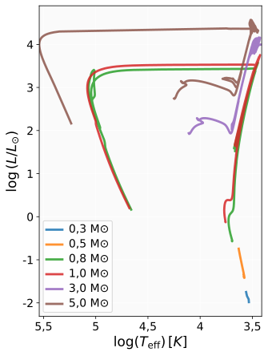
A figura acima exibe trajetórias para estrelas de massas 0,3, 0,5, 0,8, 1, 3 e 5 M\(_\odot\). Podemos observar três regimes distintos:
Para essas estrelas, optamos por não limitar os eixos, já que os valores convencionais esperados não estão de acordo com o que encontramos para essa faixa de massas. Assim, adequamos os valores para melhor visualização do diagrama HR.
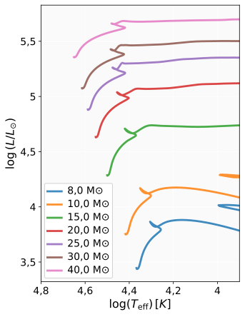
A figura acima mostra as trajetórias para estrelas de 8, 10, 15, 20, 25, 30 e 40 M\(_\odot\). Estas estrelas apresentam características marcantes:
A evolução das estrelas em ambas as faixas de massa é governada por princípios físicos bem estabelecidos pela teoria moderna de evolução estelar. Esses fundamentos — relação massa–luminosidade, tempo de vida nuclear, dependência com parâmetros estruturais e efeitos da composição — são discutidos em detalhe em trabalhos clássicos de estrutura estelar (Kippenhahn, Weigert & Weiss, 2012; Hansen, Kawaler & Trimble, 2004).
Em conclusão, a comparação entre estrelas de baixa e alta massa revela que a massa inicial é o principal parâmetro que determina luminosidade, tempo de vida e o caminho evolutivo, sendo a composição química inicial (especialmente a metalicidade) um fator modificador crucial. O diagrama HR permite visualizar de forma direta essas diferenças, funcionando como uma ferramenta essencial para diagnosticar populações estelares e reconstruir histórias evolutivas.
| Mini [M☉] | tZAMS [anos] | tTAMS [anos] | Teff [K] | log(L/L☉) | R/R☉ | Tc [K] | ρc [g/cm³] | Xc | Mec. |
|---|---|---|---|---|---|---|---|---|---|
| 0,3 | 4,70×10⁸ | — | 3410 | -1,98 | 0,29 | 7,57×10⁶ | 99,3 | 0,715 | pp |
| 0,5 | 1,57×10⁸ | 9,58×10¹⁰ | 3800 | -1,40 | 0,46 | 9,06×10⁶ | 85,6 | 0,714 | pp |
| 0,8 | 6,69×10⁷ | 2,24×10¹⁰ | 4940 | -0,57 | 0,71 | 1,18×10⁷ | 79,4 | 0,715 | pp |
| 1,0 | 4,19×10⁷ | 9,92×10⁹ | 5710 | -0,13 | 0,88 | 1,37×10⁷ | 79,0 | 0,715 | pp |
| 3,0 | 3,48×10⁶ | 3,59×10⁸ | 12800 | 1,93 | 1,87 | 2,49×10⁷ | 45,2 | 0,714 | CNO |
| 5,0 | 1,00×10⁶ | 1,00×10⁸ | 17750 | 2,74 | 2,47 | 2,84×10⁷ | 24,0 | 0,714 | CNO |
| 8,0 | 3,16×10⁵ | 3,57×10⁷ | 23240 | 3,44 | 3,23 | 3,16×10⁷ | 13,7 | 0,714 | CNO |
| 10,0 | 1,87×10⁵ | 2,36×10⁷ | 26110 | 3,75 | 3,67 | 3,31×10⁷ | 10,7 | 0,714 | CNO |
| 15,0 | 8,59×10⁴ | 1,24×10⁷ | 31650 | 4,29 | 4,62 | 3,57×10⁷ | 7,1 | 0,714 | CNO |
| 25,0 | 4,04×10⁴ | 6,93×10⁶ | 38720 | 4,88 | 6,13 | 3,88×10⁷ | 4,6 | 0,714 | CNO |
| 40,0 | 2,39×10⁴ | 4,74×10⁶ | 44740 | 5,36 | 7,92 | 4,13×10⁷ | 3,3 | 0,714 | CNO |
Para complementar a análise das trajetórias evolutivas, foram gerados diagramas HR adicionais considerando estrelas com rotação inicial de \(v/v_{\text{crit}} = 0{,}4\), na qual \(v_{\text{crit}}\) é a velocidade crítica de rotação. As figuras a seguir apresentam os resultados para estrelas de baixa e alta massa, respectivamente, permitindo uma comparação direta com os modelos sem rotação anteriormente discutidos.
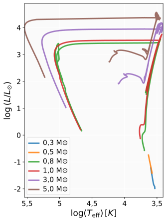
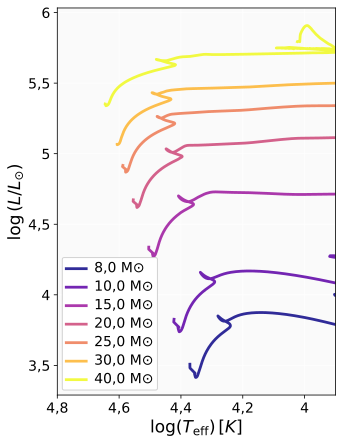
Como mostram as tabelas a seguir, o efeito da rotação no tempo de vida na sequência principal é modesto e dependente da massa. Os maiores aumentos consistentemente medidos são \({\approx}8\%\) para \(8\,\mathrm M_{\odot}\) e \({\approx}6\%\) para \(40\,\mathrm M_{\odot}\), enquanto estrelas de \(0{,}5\)–\(1\,\mathrm M_{\odot}\) mostram variação negligenciável (\(\lesssim 0{,}1\%\)).
Mecanismos Físicos da Rotação. A rotação modifica profundamente a estrutura e a evolução estelar, introduzindo anisotropias, novas formas de transporte interno e alterações no equilíbrio hidrostático. Esses efeitos tornam-se especialmente importantes em estrelas de massa intermediária e alta, nas quais a rotação inicial é geralmente elevada (Maeder, 2009). A seguir destacamos os mecanismos centrais envolvidos.
| Massa | Sem rotação | Com rotação | Diferença | Variação |
|---|---|---|---|---|
| 0,5 M☉ | 9,58×10¹⁰ | 9,59×10¹⁰ | +1×10⁸ | +0,1% |
| 0,8 M☉ | 2,48×10¹⁰ | 2,48×10¹⁰ | 0 | 0% |
| 1 M☉ | 1,15×10¹⁰ | 1,15×10¹⁰ | 0 | 0% |
| 3 M☉ | 4,59×10⁸ | 4,68×10⁸ | +9×10⁶ | +2% |
| 5 M☉ | 1,16×10⁸ | 1,19×10⁸ | +3×10⁶ | +2,6% |
| Massa | Sem rotação | Com rotação | Diferença | Variação |
|---|---|---|---|---|
| 8 M☉ | 4,01×10⁷ | 4,32×10⁷ | +3,1×10⁶ | +7,7% |
| 10 M☉ | 2,63×10⁷ | 2,70×10⁷ | +7×10⁵ | +2,7% |
| 15 M☉ | 1,38×10⁷ | 1,42×10⁷ | +4×10⁵ | +2,9% |
| 20 M☉ | 9,62×10⁶ | 9,91×10⁶ | +2,9×10⁵ | +3% |
| 25 M☉ | 6,93×10⁶ | 7,19×10⁶ | +2,6×10⁵ | +3,7% |
| 30 M☉ | 5,89×10⁶ | 6,14×10⁶ | +2,5×10⁵ | +4,2% |
| 40 M☉ | 4,74×10⁶ | 5,03×10⁶ | +2,9×10⁵ | +6,0% |
Análise Comparativa dos Efeitos da Rotação nos Tempos de Vida. As tabelas acima apresentam uma comparação quantitativa entre os tempos de vida dos modelos sem e com rotação. A análise revela padrões complexos e dependentes da massa:
Interpretação Física dos Padrões Observados. O efeito da rotação sobre o tempo de vida na sequência principal é modesto em toda a grade considerada (\(\lesssim 8\%\)). Ele é praticamente nulo em estrelas de baixa massa (\(0{,}5\)–\(1\,\mathrm M_\odot\)), nas quais o gradiente de peso molecular (\(\nabla_\mu\)) que se desenvolve entre o núcleo e o envelope suprime a mistura rotacional — a mesma estratificação estável que distingue o critério de Ledoux do de Schwarzschild (Maeder, 2009). Nas demais massas o aumento é pequeno, atingindo um máximo de \(\sim8\%\) em torno de \(8\,\mathrm M_\odot\). Essa dependência não-monotônica com a massa reflete a interação entre a mistura rotacional, que repõe combustível nas regiões centrais e prolonga a queima de hidrogênio, e a estrutura interna específica de cada estrela; uma modelagem mecanística detalhada de cada regime de massa está além do escopo deste trabalho didático.
Mecanismos Físicos Subjacentes. A rotação influencia a evolução estelar através de vários mecanismos interconectados:
Implicações para Datação de Populações Estelares. Estes resultados têm consequências importantes para métodos de datação astrofísica:
Limitações e Perspectivas Futuras. Também vale ressaltar que os modelos apresentados neste trabalho consideram uma rotação inicial uniforme e constante (\(v/v_{\text{crit}} = 0{,}4\)), mas não incluindo uma evolução rica em detalhes a respeito do perfil de rotação interna ou o acoplamento magnético entre camadas. Em casos reais observados, a rotação evolui devido ao transporte de momento angular e à perda de massa. Além disso, a metalicidade (que não foi debatida nessa análise) interage fortemente com a rotação, afetando tanto a opacidade quanto a eficiência dos ventos estelares. Estudos futuros podem nos mostrar como as diferentes evoluções da rotação e composição química influenciam na trajetória do diagrama HR.
A análise comparativa revela que a rotação estelar tem efeitos modestos e dependentes da massa nos tempos de vida na sequência principal. Enquanto estrelas de \(0{,}5\)–\(1\,\mathrm M_{\odot}\) mostram pouca sensibilidade (\(\lesssim0{,}1\%\)), estrelas de massa intermediária e alta apresentam aumentos de até \(7{,}7\%\) (pico em \(8\,\mathrm M_{\odot}\)). Esta heterogeneidade ressalta a importância de se considerar a rotação como um parâmetro nos modelos evolutivos, particularmente para datação de populações estelares ricas em estrelas de 5–15 M\(_\odot\). Os resultados demonstram que não existe uma correção universal para os efeitos da rotação, sendo necessário tratamento específico por faixa de massa.
A evolução estelar é governada por processos físicos intimamente dependentes da massa inicial da estrela, o que determina desde os tempos de vida até a estrutura interna e o comportamento energético ao longo das diferentes fases evolutivas. Para investigar essa relação, analisamos a trajetória temporal de estrelas com massas iniciais de \(0{,}5\), \(1\), \(5\), \(10\), \(15\) e \(25\,\mathrm M_{\odot}\), desde a sequência principal até as fases finais de vida. A partir das trilhas evolutivas fornecidas pelos modelos MIST, examinamos a variação de parâmetros fundamentais — como raio, temperatura efetiva, produção de energia nuclear (cadeia pp, ciclo CNO e processo triplo-\(\alpha\)), temperatura central e densidade central — com o objetivo de identificar como cada regime de massa responde aos diferentes estágios de queima nuclear. Esses diagnósticos permitem conectar diretamente a física interna (temperatura, densidade, composição e mecanismos de transporte) às propriedades observáveis das estrelas e às diferenças drásticas nos tempos evolutivos entre estrelas de baixa, intermediária e alta massa. Nas subseções a seguir, discutimos cada parâmetro em detalhe, destacando as transições estruturais e os mecanismos físicos que definem o ciclo de vida estelar em cada regime de massa.
A evolução temporal do raio estelar apresenta um comportamento fortemente dependente da massa inicial, refletindo as diferenças estruturais e nos tempos de evolução nuclear entre estrelas de baixa, média e alta massa. A figura a seguir mostra as trajetórias evolutivas para estrelas de \(0{,}5, 1, 5, 10, 15\) e \(25\,\mathrm{M}_\odot\) desde o início da sequência principal até as fases finais de vida, considerando apenas idades superiores a \(1\,\mathrm{Myr}\) para eliminar a pré-sequência principal.
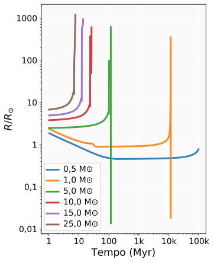
Para estrelas de baixa massa, observa-se uma evolução lenta, dominada por longas escalas de tempo na sequência principal. A estrela de \(0{,}5\,\mathrm{M}_\odot\) exibe variações modestas de raio ao longo de praticamente toda sua vida, mantendo-se próxima de \(R\approx 0{,}5\)–\(1\,\mathrm{M}_\odot\) ao longo de mais de \(10^{10}\) anos. Já o caso solar (\(1\,\mathrm{M}_\odot\)) mostra um período inicial de contração até atingir a sequência principal, seguido de uma fase estável com pequeno decréscimo no raio durante a queima de hidrogênio central. Em idades próximas ao fim da sequência principal (\(\sim 10^{10}\) anos), o aumento abrupto do raio marca a entrada na fase de gigante vermelha, atingindo valores superiores a \(R \approx 300\,\mathrm{R}_\odot\).
Para massas intermediárias, a evolução é muito mais rápida: suas escalas de vida variam entre \(10^{7}\) e \(10^{8}\) anos. Essas estrelas apresentam uma fase inicial de contração mais curta, atingem rapidamente a sequência principal e, após o esgotamento do hidrogênio central, sofrem expansão significativa do envelope, alcançando raios máximos da ordem de centenas de raios solares. O pico observado nas curvas — particularmente pronunciado em \(5\,\mathrm{M}_\odot\) — corresponde à expansão do envelope durante a fase de gigante vermelha ou supergigante, momento em que o principal combustível da estrela é o hélio.
Nas estrelas de alta massa, os tempos evolutivos são ainda menores, variando de poucos milhões até aproximadamente \(10^{7}\) anos. Já na sequência principal, essas estrelas apresentam raios mais elevados em comparação com massas menores. A expansão é também mais abrupta e precoce, com máximos que ultrapassam \(R\approx 10^{3}\,\mathrm{R}_\odot\), atingindo regimes típicos de supergigantes vermelhas. Essa expansão extrema reflete a forte dependência da estrutura estelar com a luminosidade e com a eficiência do transporte convectivo no envelope. Após esse pico, o colapso dinâmico do raio (visível no final das curvas) marca o início das fases finais que antecedem a formação do remanescente compacto.
Em resumo, a figura acima evidencia três comportamentos essenciais: (i) a forte dependência do raio com a massa inicial ao longo da vida estelar; (ii) a aceleração drástica da evolução para massas maiores, reduzindo o tempo total de vida em vários ordens de grandeza; (iii) a expansão extrema do envelope como assinatura universal das fases pós-sequência principal, com amplitudes que aumentam com a massa estelar. Esses resultados são consistentes com os valores numéricos obtidos a partir de código em Python, que indicam raios máximos variando de apenas alguns R\(_\odot\) para \(0{,}5\,\mathrm{M}_\odot\) até mais de \(1200\,\mathrm{R}_\odot\) para estrelas de \(25\,\mathrm{M}_\odot\). Enquanto estrelas de baixa massa apresentam expansão única e tardia, as de massa intermediária mostram múltiplas fases de expansão e contração, e as de alta massa exibem expansão precoce e maciça seguida de colapso terminal.
Para as estrelas extremamente massivas (\(40\)–\(150\,\mathrm{M}_\odot\)), a evolução do raio apresenta características marcantes que diferem significativamente do padrão observado em estrelas de menor massa. A análise revela que o tempo de vida diminui drasticamente com o aumento da massa, variando de aproximadamente \(4{,}8\) milhões de anos para \(40\,\mathrm{M}_\odot\) em até apenas \(3\) milhões de anos para \(150\,\mathrm{M}_\odot\).
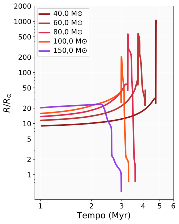
Notavelmente, observa-se um comportamento não monotônico na expansão máxima em função da massa. A estrela de \(40\,\mathrm{M}_\odot\) atinge a maior expansão absoluta, enquanto estrelas mais massivas apresentam expansões progressivamente menores. A estrela mais massiva (de \(150\,\mathrm{M}_\odot\)) apresenta expansão mínima de apenas \(\approx 24\,R_{\odot}\).
Este padrão inverso, no qual estrelas mais massivas se expandem menos, pode ser atribuído a vários fatores físicos: (i) a intensa pressão de radiação em estrelas acima de \(60\,\mathrm{M}_\odot\) inibe a expansão do envelope; (ii) perdas de massa significativas através de ventos estelares fortes removem material antes que a expansão possa ocorrer; (iii) a queima nuclear extremamente rápida em núcleos mais quentes leva a transições evolutivas mais abruptas. O colapso final do raio, visível particularmente nas estrelas de \(80, 100\) e \(150\,\mathrm{M}_\odot\), marca as fases finais de queima nuclear antes do colapso do núcleo.
A estrela de \(150\,\mathrm{M}_\odot\) apresenta o comportamento mais peculiar, praticamente mantendo seu raio inicial durante toda a evolução, sugerindo que estrelas nesta faixa de massa podem evoluir diretamente para estrelas de Wolf-Rayet sem passar por uma fase significativa de supergigante vermelha, devido às extremas taxas de perda de massa.
A supressão da expansão em estrelas acima de \(60\,\mathrm{M}_\odot\) constitui um exemplo marcante de como limites físicos fundamentais, como o limite de Eddington, impõem restrições observáveis na evolução estelar. Este comportamento contrastante em relação às expectativas baseadas em extrapolações de massas menores destaca a importância de modelos específicos para estrelas extremamente massivas.
A figura a seguir apresenta a variação do logaritmo da temperatura efetiva para estrelas de \(0{,}5\), \(1\), \(5\), \(10\), \(15\) e \(25\,\mathrm M_{\odot}\) desde o início da sequência principal até as fases finais.
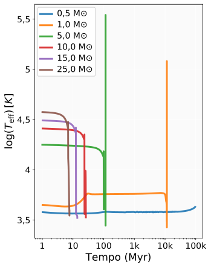
Para estrelas de baixa massa, observa-se uma trajetória marcada por estabilidade durante a longa fase de sequência principal, com temperaturas efetivas mantendo-se aproximadamente constantes em torno de \(\log(T_{\mathrm{eff}}/\mathrm{K}) \approx 3{,}5\)–\(3{,}7\). No caso de uma estrela de \(1\,\mathrm M_{\odot}\), após o esgotamento do hidrogênio central, a expansão do envelope durante a fase de gigante vermelha provoca um declínio acentuado na temperatura efetiva, que passa a assumir valores inferiores a \(\log(T_{\mathrm{eff}}/\mathrm{K}) \approx 3{,}5\), refletindo o resfriamento superficial associado ao aumento do raio estelar.
Além disso, uma estrela de \(0{,}5\,\mathrm M_{\odot}\) apresenta temperaturas em torno de \(T_{\mathrm{eff}} \sim 3000\,\mathrm{K}\), exibindo uma coloração mais avermelhada e pertencendo ao tipo espectral M. Seu processo evolutivo é lento e estável, com aumento suave da temperatura ao longo do tempo devido às baixas instabilidades no núcleo. Já uma estrela de \(1\,\mathrm M_{\odot}\) apresenta temperatura efetiva típica de \(\sim 6000\,\mathrm{K}\), com coloração amarela. Quando o hidrogênio central se esgota, o núcleo se contrai e o envelope se expande, fazendo com que a temperatura efetiva caia abruptamente, como observado no gráfico.
Nas estrelas de massa intermediária, como as de \(5\,\mathrm M_{\odot}\), a evolução é mais dinâmica. Durante a sequência principal, apresentam temperaturas mais elevadas, tipicamente em torno de \(T_{\mathrm{eff}} \sim 20\,000\,\mathrm{K}\), pertencendo ao tipo espectral B e exibindo coloração branca. O esgotamento do hidrogênio no núcleo leva a um colapso rápido, produzindo um pico mais acentuado e prolongado na temperatura efetiva antes que a estrela se expanda para a fase de gigante vermelha. Além disso, essas estrelas frequentemente apresentam loops característicos no diagrama HR durante a queima de hélio, associados a instabilidades térmicas e ajustes estruturais. No final de suas vidas, essas estrelas podem exibir flutuações térmicas significativas, com a de \(5\,\mathrm M_{\odot}\) apresentando um reaquecimento final associado a pulsos térmicos da fase AGB (e não a um colapso do núcleo, pelo mesmo motivo discutido acima: \(5\,\mathrm M_\odot\) está abaixo do limiar de \(\sim 8\,\mathrm M_\odot\) para supernova por colapso de núcleo), enquanto a de \(10\,\mathrm M_{\odot}\) mantém temperaturas mais baixas ao longo da fase de supergigante vermelha até o evento de supernova.
As temperaturas efetivas iniciam em valores ainda mais elevados para as estrelas de alta massa, e mantêm-se relativamente altas durante a maior parte de suas vidas curtas. O resfriamento durante a fase de supergigante vermelha é mais pronunciado em comparação com estrelas de menor massa quando relacionamos às temperaturas iniciais. O final da evolução para estas estrelas massivas é marcado por um colapso abrupto do raio com consequente aumento rápido da temperatura efetiva, imediatamente antes da supernova, resultado da perda de massa que expõe camadas internas mais quentes ou da contração final do núcleo.
As estrelas de alta massa, como as de \(10\), \(15\) e \(20\,\mathrm M_{\odot}\), apresentam as maiores temperaturas efetivas, frequentemente acima de \(30\,000\,\mathrm{K}\), pertencendo ao tipo espectral O, com coloração azulada. Iniciam suas vidas com temperaturas extremamente elevadas e as mantêm durante grande parte de suas curtas escalas de tempo evolutivas. Ao deixarem a sequência principal, expandem-se rapidamente e ingressam na fase de supergigante vermelha, apresentando um resfriamento mais pronunciado quando comparado ao de estrelas de menor massa, devido ao contraste com suas temperaturas iniciais extremamente altas. Nos estágios finais de evolução, o colapso abrupto do núcleo resulta em um aumento súbito da temperatura efetiva imediatamente antes da supernova, seja pela contração final que aquece as camadas externas, seja pela perda de massa que expõe regiões internas mais quentes.
A produção de energia nuclear é o motor fundamental da evolução estelar, responsável por determinar luminosidades, estrutura interna e escalas de tempo ao longo da vida das estrelas. Diferentes mecanismos de fusão tornam-se relevantes conforme a temperatura e densidade centrais evoluem, estabelecendo regimes distintos de queima nuclear para cada faixa de massa. Em estrelas de baixa massa, a cadeia próton-próton domina praticamente toda a sequência principal, enquanto em estrelas mais massivas o ciclo CNO assume rapidamente a geração de energia. Em fases mais avançadas, quando o hidrogênio central se esgota e temperaturas da ordem de \(10^8\,\mathrm{K}\) são atingidas, o processo triplo-\(\alpha\) torna-se o principal responsável pela fusão de hélio. As subseções a seguir discutem separadamente cada um desses processos, comparando sua eficiência, domínio em massa e assinatura temporal nas trajetórias evolutivas estudadas.
Todos os tempos discutidos nesta seção são medidos desde o início da sequência principal, permitindo comparações diretas entre estrelas de diferentes massas. O tempo de evolução pré-sequência principal não é considerado, uma vez que não contribui significativamente para as fases nucleares destacadas.
As três subseções a seguir são a contrapartida
observacional/temporal de todo o formalismo deduzido no
capítulo de Geração de Energia: a taxa de reação
\(\langle\sigma v\rangle\), o fator de Gamow e a equação mestra de
rede de reações, aplicados ali a um único instante e a pares
isolados de núcleos, são exatamente o que um código como o
MESA integra, núcleo a núcleo e passo a passo no
tempo, para produzir as curvas \(L_{\rm pp}(t)\), \(L_{\rm
CNO}(t)\) e \(L_{3\alpha}(t)\) mostradas nas figuras a seguir. A
forte dependência com a temperatura de cada processo —
\(\varepsilon_{\rm pp}\propto T^4\), \(\varepsilon_{\rm
CNO}\propto T^{15\text{–}20}\) e \(\varepsilon_{3\alpha}\propto
T^{40}\), já deduzidas e comentadas naquele capítulo — é
precisamente o que explica, de forma quantitativa, por que a
transição de dominância entre os três processos ocorre de forma
tão abrupta nas trajetórias evolutivas discutidas abaixo.
A cadeia próton-próton constitui um dos principais mecanismos de fusão nuclear através do qual estrelas convertem hidrogênio em hélio, sendo particularmente dominante em estrelas de baixa massa. Este processo inicia-se com a colisão entre dois prótons que, mediante o tunelamento quântico através da barreira coulombiana, formam um núcleo de deutério:
\[ p + p \rightarrow \,^2_1H + e^+ + \nu_e + 1{,}442\,\text{MeV} \tag{11.3} \]Sequencialmente, o deutério funde-se com outro próton produzindo \(^3He\), que posteriormente pode seguir diferentes ramos de reação. O ramo PP-I, dominante em temperaturas típicas de \(\sim 10^7\) K, completa-se através da fusão de dois núcleos de \(^3\)He em \(^4\)He, liberando aproximadamente 26,7 MeV de energia.
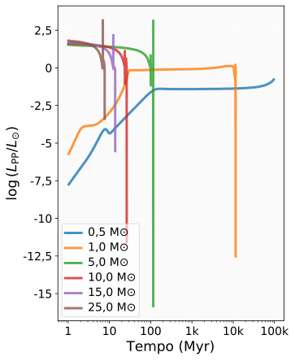
A figura acima evidencia a dependência da massa na contribuição da cadeia PP para a geração de energia nuclear. Para estrelas de baixa massa (\(0{,}5\) e \(1\,\mathrm M_{\odot}\)), o gráfico inclui a fase pré-ZAMS (PMS), pois as curvas abrangem todas as idades \(>1\) Myr sem filtragem por fase evolutiva. O trecho inicial com \(\log(L_{\mathrm{PP}}/L_{\odot}) \approx -7\) a \(-4\) corresponde a essa fase pré-ZAMS, durante a qual a queima nuclear de hidrogênio ainda está se instalando — a PMS de \(0{,}5\,\mathrm M_{\odot}\) estende-se até \({\sim}157\) Myr, e a de \(1\,\mathrm M_{\odot}\) até \({\sim}42\) Myr. Na entrada da sequência principal (ZAMS), \(\log(L_{\mathrm{PP}}/L_{\odot}) \approx -1{,}4\) (\(0{,}5\,\mathrm M_{\odot}\)) e \(\approx -0{,}2\) (\(1\,\mathrm M_{\odot}\)), estabilizando-se ao longo da queima de hidrogênio central. Estas estrelas exibem apenas uma modesta diminuição na produção energética via PP até o final da queima de hidrogênio central.
Para estrelas de massa intermediária e alta, observa-se um comportamento distinto: a contribuição da cadeia PP decai abruptamente nos primeiros milhões de anos, com \(\partial \log(L_{\mathrm{PP}})/\partial \log(t) \propto -\mathrm M/\mathrm M_{\odot}\). Este declínio acelerado marca a transição para o domínio do ciclo CNO, sensível a ambientes de maior temperatura central. Quanto mais massiva a estrela, mais precoce e completa é esta transição, com as estrelas de \(15\) e \(25\,\mathrm M_{\odot}\) apresentando contribuições marginais da cadeia PP (\(\log(L_{\mathrm{PP}}/L_{\odot}) < -10\)) já nas fases iniciais de evolução.
Embora estrelas mais massivas exibam luminosidades nucleares iniciais mais elevadas, isso não implica maior eficiência da cadeia PP. Esse aumento reflete apenas as condições internas mais quentes e densas antes da transição completa para o ciclo CNO, que rapidamente passa a dominar a geração de energia.
A diminuição da eficiência da cadeia PP nas estrelas mais massivas conduz naturalmente ao segundo grande mecanismo de fusão de hidrogênio: o ciclo CNO, cujas taxas são fortemente dependentes da temperatura e tornam-se dominantes conforme o núcleo estelar se aquece.
O ciclo CNO (carbono-nitrogênio-oxigênio) representa o segundo principal mecanismo de fusão de hidrogênio em hélio, tornando-se dominante em estrelas com massas superiores a \(\sim 1{,}5\,\mathrm M_{\odot}\). Nos modelos MIST, o ciclo predominante durante a sequência principal é o CNO-I, embora CNO-II e CNO-III possam contribuir marginalmente em temperaturas centrais superiores a \(2{,}5 \times 10^7\,\mathrm{K}\). Esses subciclos não alteram a composição química global, mas afetam sensivelmente a taxa de produção de energia devido às diferenças nas seções de choque das reações. Diferentemente da cadeia próton-próton, este processo atua como um ciclo catalítico em que núcleos de carbono, nitrogênio e oxigênio participam das reações sem serem consumidos, servindo como intermediários para a conversão de quatro prótons em um núcleo de \(^4\)He.
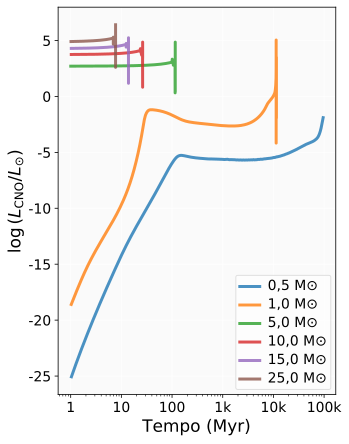
A figura acima demonstra a transição de dominância entre os mecanismos nucleares em função da massa estelar. Para a estrela de \(1\,\mathrm M_{\odot}\), o ciclo CNO atinge um máximo de \(\log(L_{\mathrm{CNO}}/L_{\odot}) = 5{,}04\), porém com duração muito limitada (\(1{,}6\) bilhão de anos), sendo subsequentemente superado por outros processos. Este comportamento reflete a forte dependência da temperatura do ciclo CNO (\(\epsilon_{\mathrm{CNO}} \propto T^{20}\)), que o torna extremamente sensível às condições termodinâmicas do núcleo estelar.
Em estrelas de massa intermediária, o ciclo CNO estabelece-se como o mecanismo dominante durante a sequência principal. Para \(5\,\mathrm M_{\odot}\), atinge \(\log(L_{\mathrm{CNO}}/L_{\odot}) = 4{,}86\) com duração de \(\sim 115\) milhões de anos, enquanto em \(10\,\mathrm M_{\odot}\) mantém valores similares (\(\log(L_{\mathrm{CNO}}/L_{\odot}) = 4{,}86\)) por \(\sim 25\) milhões de anos. A redução no tempo de dominância com o aumento da massa é causada pela aceleração dos processos evolutivos.
Para estrelas de alta massa, o ciclo CNO alcança seu máximo de eficiência. A estrela de \(25\,\mathrm M_{\odot}\) alcança \(\log(L_{\mathrm{CNO}}/L_{\odot}) = 6{,}41\) — aproximadamente uma ordem de grandeza acima das estrelas de massa intermediária — embora por apenas \(\sim 6{,}7\) milhões de anos. Esta elevação na produção energética acompanha o aumento das temperaturas centrais, que, nas estrelas massivas, podem exceder \(3 \times 10^7\) K; condições ideais para a ativação eficiente do ciclo.
A abrupta queda na contribuição do ciclo CNO ao final de cada trajetória marca o esgotamento do hidrogênio central e a transição para fases evolutivas mais avançadas, nas quais a queima de hélio e elementos mais pesados assume o papel dominante na produção de energia estelar.
Concluída a queima de hidrogênio, a contração do núcleo aumenta as temperaturas acima de \(10^{8}\) K, inaugurando a fase de queima de hélio através do processo triplo-\(\alpha\), que marca o início da evolução nuclear avançada.
O processo triplo-\(\alpha\) representa um marco crucial na evolução estelar, marcando a transição da queima de hidrogênio para a fusão de elementos mais pesados. A elevada taxa dessa reação depende criticamente da existência do estado ressonante de Hoyle em \(^{12}\mathrm C\), cuja energia coincide com a soma dos estados intermediários de \(^8\mathrm{Be}\) e \(\alpha\). Essa ressonância aumenta em muitas ordens de grandeza a probabilidade de fusão quando \(T \gtrsim 10^{8}\) K, permitindo que o carbono seja produzido de forma eficiente (Fowler, 1984). Este mecanismo nuclear, que converte três núcleos de hélio em carbono através de uma reação em duas etapas, torna-se significativo apenas quando as estrelas atingem temperaturas centrais superiores a \(\sim 10^8\) K, condições típicas das fases pós-sequência principal.
A figura a seguir revela padrões temporais distintos para o processo triplo-\(\alpha\) em diferentes faixas de massa. Para a estrela de \(1\,\mathrm M_{\odot}\), o processo manifesta-se tardiamente, com \(\log(L_{\mathrm{tri\_alfa}}/L_{\odot}) = 6{,}72\) alcançado apenas após \(\sim 10^{10}\) anos de evolução, porém com duração relativamente breve de \(\sim 127\) milhões de anos. Este comportamento reflete a lenta progressão evolutiva das estrelas de baixa massa até as fases de gigante vermelha, nas quais as condições necessárias para a ignição do hélio são finalmente atingidas.
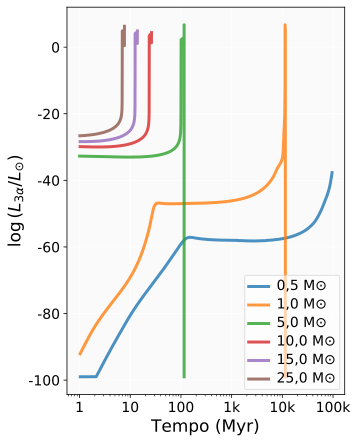
Em estrelas de massa intermediária, o triplo-\(\alpha\) exibe uma ativação mais precoce e energeticamente significativa. A estrela de \(5\,\mathrm M_{\odot}\) inicia a queima de hélio via triplo-\(\alpha\) na fase de queima central de hélio (CHeB, fase 3, \({\sim}101\)–\(115\) Myr), com \(\log(L_{\mathrm{tri\_alfa}}/L_{\odot}) = 6{,}71\) atingido ao longo de \({\sim}15\) milhões de anos no total (triplo-\(\alpha\) ativo de \({\sim}100{,}7\) a \({\sim}115{,}6\) Myr). Importa ressaltar que esse valor máximo não ocorre durante a CHeB, mas sim nos pulsos térmicos da fase TPAGB (Thermal Pulse Asymptotic Giant Branch, fase 5, \({\sim}115{,}6\) Myr), quando \(\rho_c \approx 1{,}25 \times 10^7\,\mathrm{g\,cm}^{-3}\), consistente com a degenerescência parcial do núcleo de C/O nessa fase final da vida da estrela. Notavelmente, nesta faixa de massa o processo triplo-\(\alpha\) torna-se mecanicamente dominante, superando tanto a cadeia PP quanto o ciclo CNO.
Para as estrelas de alta massa, o processo triplo-\(\alpha\) mostra uma evolução ainda mais acelerada. A estrela de \(25\,\mathrm M_{\odot}\) ativa a queima de hélio em apenas \(\sim 6\) milhões de anos, alcançando \(\log(L_{\mathrm{tri\_alfa}}/L_{\odot}) = 6{,}29\) com duração de apenas \(\sim 0{,}7\) milhão de anos. A redução drástica nos tempos característicos acompanha o aumento exponencial das temperaturas centrais e taxas de consumo nuclear em estrelas massivas.
É importante ressaltar que, enquanto em estrelas de \(5\,\mathrm M_{\odot}\) o triplo-\(\alpha\) constitui o mecanismo primário, nas estrelas de \(10\,\mathrm M_{\odot}\) e superiores ele é suplantado pelo ciclo CNO durante a sequência principal, indicando que a queima de hidrogênio via CNO mantém-se competitiva mesmo nas fases iniciais de queima de hélio em estrelas massivas.
O pico abrupto seguido por rápido decaimento nas curvas do triplo-\(\alpha\) para todas as massas evidencia a natureza transitória deste processo, que consome rapidamente o combustível de hélio disponível antes da ignição de elementos mais pesados ou do colapso final do núcleo, marcando assim um ponto de inflexão crítico na vida das estrelas.
Em conjunto, a evolução das contribuições relativas da cadeia PP, do ciclo CNO e do processo triplo-\(\alpha\) nos mostra como a temperatura central, a composição química e a massa determinam a hierarquia dos mecanismos nucleares ao longo da vida das estrelas.
Por que a queima de H precisa de \(T\sim10^7\) K, a de He de \(\sim10^8\) K, e as de C/Ne/O/Si de \(10^8\)–\(10^9\) K? Porque a altura da barreira coulombiana cresce com \(Z_1Z_2\) [Eq. (11.10), adiante], e é o tunelamento quântico através dela — não a energia térmica sozinha — que permite a fusão.
\(E_C=\)— MeV · Temperatura de referência para ignição (regra de bolso, \(kT\sim E_C/20\)): \(T\sim\)— K.
—
O produto entre a cauda maxwelliana decrescente (cinza) e a probabilidade de tunelamento crescente com \(E\) (roxo) forma o pico de Gamow (curva preenchida) — a faixa de energia onde a maioria das fusões realmente ocorre, nem na energia mais provável nem na energia mínima para tunelar, mas em um compromisso entre as duas. Link cruzado: dedução completa deste mesmo pico no capítulo de Geração de Energia.
Energia do pico de Gamow: \(E_0=\)— keV (massa reduzida de referência ~1 u).
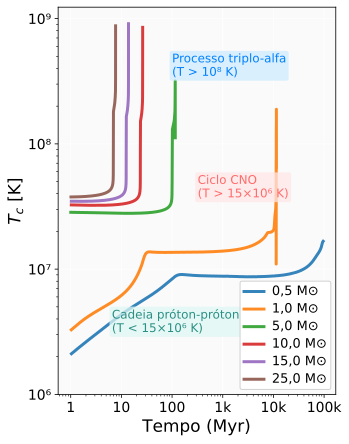
As estrelas de baixa massa (\(0{,}5\) e \(1{,}0\,\mathrm M_{\odot}\)) apresentam uma evolução muito constante da temperatura central ao longo de \(\sim10^{10}\) anos. Seus núcleos altamente opacos e parcialmente degenerados impedem contrações agressivas, resultando em um aumento suave de \(T_c\) até o final da sequência principal. Para essas estrelas, as temperaturas centrais permanecem relativamente moderadas durante a maior parte da sequência principal, tipicamente em \(T_c \sim (5\)–\(15)\times10^6\,\mathrm{K}\). Essa estabilidade decorre da fraca dependência da cadeia próton–próton com a temperatura (\(\epsilon_{\mathrm{PP}} \propto T^4\)), o que confere autorregulação ao núcleo. Apenas nas fases tardias, quando o hidrogênio se esgota e a contração gravitacional se intensifica sobre um núcleo já parcialmente degenerado, observa-se um crescimento rápido da temperatura até valores próximos de \(10^8\,\mathrm{K}\), necessários para a ignição do hélio pelo processo triplo-\(\alpha\). Em estrelas de \(\sim1\,\mathrm M_{\odot}\), essa ignição ocorre de forma explosiva, no chamado flash do hélio.
Nas estrelas de massa intermediária, as temperaturas centrais iniciam em valores mais elevados (\(\sim 2\)–\(4 \times 10^7\,\mathrm{K}\)) e aumentam de forma mais acentuada ao longo da evolução. Nessas massas, a queima de hidrogênio transita rapidamente de um regime misto PP–CNO para a dominância do ciclo CNO, cuja sensibilidade extrema à temperatura (\(\epsilon_{\mathrm{CNO}} \propto T^{15-20}\)) provoca uma subida muito mais rápida de \(T_c\). Como os núcleos dessas estrelas ainda não atingem níveis significativos de degenerescência durante o esgotamento do hidrogênio, a contração gravitacional subsequente é eficiente: pequenas reduções no raio central elevam rapidamente a temperatura. Assim, a ignição do hélio ocorre em núcleos pouco ou não degenerados, evitando o flash do hélio típico das estrelas de baixa massa e permitindo uma transição suave para a queima de hélio em equilíbrio hidrostático.
Os valores extremos de temperatura, encontrados em estrelas de alta massa, permitem a queima sequencial de hélio, carbono, neônio, oxigênio e silício, uma vez que suas temperaturas centrais já começam acima de \(5\times 10^7\,\mathrm{K}\) e rapidamente atingem \(T_c > 3\times 10^8\,\mathrm{K}\) em apenas alguns milhões de anos. Nesses casos, a degenerescência praticamente não desempenha papel estrutural relevante, pois as temperaturas elevadas e os núcleos convectivos mantêm o gás firmemente no regime não degenerado. A escalada contínua de \(T_c\) reflete tanto a intensa contração gravitacional necessária para sustentar luminosidades elevadas quanto a ativação de reações nucleares com dependências de potência extremamente altas em temperatura.
De modo geral, observa-se que quanto maior a massa inicial da estrela, mais elevada é a temperatura central em todos os estágios evolutivos. As descontinuidades e mudanças de inclinação nas curvas evidenciam transições críticas, como o fim da queima de hidrogênio, a ignição do hélio e o início dos ciclos de fusão avançados. Assim, a evolução de \(T_c\) não apenas diferencia claramente os regimes de degenerescência e não degenerescência, mas também torna a temperatura central um dos parâmetros mais sensíveis para identificar o estágio evolutivo interno de uma estrela.
A densidade central (\(\rho_c\)) constitui um dos parâmetros internos mais sensíveis ao balanço entre contração gravitacional e os mecanismos de suporte de pressão atuantes no interior estelar. A figura a seguir evidencia comportamentos não-monotônicos ao longo da evolução e entre diferentes massas iniciais, revelando que a relação entre massa e densidade central é mais complexa do que uma dependência direta com a gravidade. Em particular, a presença ou ausência de degenerescência eletrônica desempenha papel decisivo na forma dessas curvas.
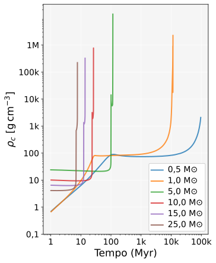
Para estrelas de baixa massa, como \(0{,}5\) e \(1\,\mathrm M_{\odot}\), o gráfico abrange a fase pré-ZAMS (PMS, idades \(>1\) Myr): no início das curvas (\({\sim}1\) Myr), \(\rho_c \approx 0{,}7\,\mathrm{g\,cm^{-3}}\), crescendo até \(\rho_c \approx 79\)–\(86\,\mathrm{g\,cm^{-3}}\) na entrada da sequência principal (ZAMS — \({\sim}42\) Myr para \(1\,\mathrm M_{\odot}\) e \({\sim}157\) Myr para \(0{,}5\,\mathrm M_{\odot}\)), compatíveis com núcleos dominados por pressão térmica durante a sequência principal. Em estrelas de \(0{,}5\,\mathrm M_{\odot}\), a evolução lenta e a baixa luminosidade mantêm o núcleo próximo ao regime parcialmente degenerado, garantindo grande estabilidade estrutural: a queima de hidrogênio ocorre de forma suave e regulada, sem contrações bruscas. Já em estrelas de \(1\,\mathrm M_{\odot}\), embora o núcleo permaneça não degenerado durante a maior parte da sequência principal, a contração após o esgotamento do hidrogênio leva à formação de um núcleo de hélio degenerado. Essa degenerescência crescente é responsável pelo aumento de muitas ordens de grandeza na densidade, culminando no flash do hélio quando \(\rho_c\) atinge valores suficientemente altos para permitir ignição explosiva.
A estrela de \(5\,\mathrm M_{\odot}\) exibe o comportamento mais notável entre todas as massas analisadas, apresentando o maior pico de densidade central, com \(\rho_c \sim 1{,}25\times 10^7\,\mathrm{g\,cm^{-3}}\) nos pulsos térmicos da fase TPAGB (\({\sim}115{,}6\) Myr). A ausência de convecção total e a elevada opacidade amplificam a compressão do núcleo de C/O, produzindo o pico abrupto observado. Estrelas de massa intermediária são particularmente sensíveis a reorganizações estruturais que aparecem como variações intensas na densidade central.
O pico \(\rho_c \approx 1{,}25 \times 10^7\ \mathrm{g\,cm}^{-3}\) durante os pulsos térmicos da TPAGB (\({\sim}115{,}6\) Myr) reflete a degenerescência eletrônica do núcleo de C/O da estrela de \(5\,\mathrm M_\odot\). Importa notar que esse núcleo de C/O forma-se ao término da queima não-degenerada de hélio na fase CHeB (\({\sim}101\)–\(115\) Myr) e somente se torna eletricamente degenerado na contração subsequente, já nas fases AGB e TPAGB — não durante a queima central de hélio em si. A densidade atingida, embora elevada, permanece muito abaixo das condições para ignição de carbono não-degenerado (\(\rho_c \gtrsim 2 \times 10^8\ \mathrm{g\,cm}^{-3}\)); e a massa desse núcleo permanece inferior ao limite de Chandrasekhar (\(M_\mathrm{Ch} \approx 1{,}4\,\mathrm M_\odot\)), conforme esperado pela relação empírica massa inicial–final para progenitoras nessa faixa de massa (Salaris et al., 2005), abaixo do qual a pressão de degenerescência eletrônica é suficiente para sustentar a estrutura sem colapso gravitacional.
A estrela ejeta o envelope na TPAGB e deixa esse núcleo como resíduo: uma anã branca de C/O. O contraste com estrelas de baixa massa (\(M \lesssim 2\,\mathrm M_\odot\)) é instrutivo: nessas estrelas o núcleo de hélio já está degenerado antes de atingir a temperatura de ignição (\({\sim}10^8\) K), de modo que a queima se inicia de forma explosiva — o helium flash. Na estrela de \(5\,\mathrm M_\odot\) isso não ocorre: o núcleo de hélio ignite de forma não-degenerada, com a queima central de He (CHeB) transcorrendo de modo estável; apenas o resíduo de C/O resultante atinge o regime degenerado durante a contração pós-CHeB.
Esta discussão sobre o núcleo de C/O degenerado da estrela de \(5\,M_\odot\) é uma aplicação direta de dois resultados centrais já deduzidos neste livro. A pressão que sustenta esse núcleo — mesmo à temperatura praticamente constante da fase TPAGB, enquanto a densidade sobe seis ordens de grandeza — é exatamente a pressão de degenerescência eletrônica não-relativística, \(P\propto\rho^{5/3}\), deduzida do zero a partir da mecânica quântica de um gás de Fermi no Capítulo 8. E o limite de massa citado acima, \(M_{\rm Ch}\approx1{,}4\,M_\odot\), é precisamente a massa de Chandrasekhar deduzida no Capítulo 9 a partir da equação diferencial de Chandrasekhar (a generalização relativística da equação de Lane–Emden). O fato de o núcleo residual desta estrela ficar abaixo desse limite é o que garante que ela termine sua vida como uma anã branca estável, e não como uma supernova — a mesma física, com o mesmo número, aparece aqui como consequência natural de um cálculo evolutivo temporal completo.
Para estrelas massivas (\(10\)–\(25\,\mathrm M_{\odot}\)), a tendência se inverte: suas densidades centrais máximas são inferiores às das estrelas intermediárias, atingindo apenas \(\sim 10^5\)–\(10^6\,\mathrm{g\,cm^{-3}}\). Esse comportamento resulta do papel dominante da pressão de radiação, que mantém os núcleos mais expandidos e quentes, evitando a degenerescência eletrônica durante a maior parte da evolução. Assim, mesmo com temperaturas muito elevadas, seus núcleos não se tornam compactos o suficiente para atingir densidades extremas até as fases derradeiras. À medida que progridem pela queima sequencial de hélio, carbono, neônio, oxigênio e silício, a densidade aumenta gradualmente, mas continua limitada pelo intenso suporte térmico. Apenas no final da vida, quando o núcleo de ferro torna-se altamente compacto, a densidade cresce até o ponto em que elétrons degenerados começam a ser capturados por prótons, removendo o próprio suporte por degenerescência e desencadeando o colapso gravitacional em queda livre que precede a supernova.
Além disso, as densidades centrais máximas nessas estrelas são inferiores às de massas intermediárias, com valores de \(\sim 7{,}7\times 10^5\,\mathrm{g\,cm^{-3}}\) (\(10\,\mathrm M_{\odot}\)), \(\sim 3{,}3\times 10^5\,\mathrm{g\,cm^{-3}}\) (\(15\,\mathrm M_{\odot}\)) e \(\sim 2{,}2\times 10^5\,\mathrm{g\,cm^{-3}}\) (\(25\,\mathrm M_{\odot}\)). Essa tendência inversa com a massa reflete o papel dominante da pressão de radiação nesses objetos, que mantém núcleos mais quentes e menos compactos. Nesses regimes extremos, o suporte por pressão térmica e radiação impede que o núcleo atinja níveis elevados de degenerescência durante grande parte da evolução, resultando em densidades centrais relativamente menores.
A comparação entre as trajetórias temporais revela três padrões: (i) Estrelas de baixa massa apresentam um aumento lento e depois acelerado de \(\rho_c\), refletindo a aproximação progressiva da degenerescência eletrônica; (ii) Estrelas intermediárias exibem picos abruptos de densidade, resultado direto de ignições termonucleares sensíveis às condições internas e ao grau de degenerescência parcial; (iii) Estrelas massivas mostram evoluções mais suaves, dominadas pela pressão de radiação, com densidades relativamente baixas até o colapso final.
Esses resultados demonstram que a densidade central não cresce simplesmente com a massa estelar. Em vez disso, ela reflete a competição entre pressão térmica, degenerescência eletrônica e pressão de radiação, bem como o impacto das transições nucleares que reestruturam o núcleo ao longo da evolução.
A estrutura interna de uma estrela resulta do balanço entre transporte radiativo e transporte convectivo de energia. Na prática usa-se o critério de Schwarzschild: uma região é convectiva se o gradiente radiativo excede o adiabático, \(\nabla_{\rm rad}>\nabla_{\rm ad}\), o que implica que o transporte por fótons não consegue escoar o fluxo energético e a matéria se mobiliza para transportar calor (convecção). Como
\[ \nabla_{\rm rad} \propto \frac{\kappa L}{m T^{4}}\,, \tag{11.4} \]o aumento da luminosidade \(L\), da opacidade \(\kappa\), ou da redução da massa interior \(m\) favorecem a convecção. Esses princípios físicos explicam as tendências observadas nas figuras a seguir (Kippenhahn, Weigert & Weiss, 2012; Hansen, Kawaler & Trimble, 2004; Maeder, 2009; Paxton et al., 2011).
\(\nabla_{\rm rad}\) e \(\nabla_{\rm ad}\) aqui são exatamente os mesmos gradientes logarítmicos \(\nabla\equiv\mathrm d\ln T/\mathrm d\ln P\) definidos e deduzidos em detalhe no Capítulo 5 — o critério de Schwarzschild \(\nabla_{\rm rad}>\nabla_{\rm ad}\) citado aqui é literalmente o mesmo critério (com a mesma notação) usado para explicar a zona convectiva do Sol naquele capítulo. O gradiente de peso molecular \(\nabla_\mu\) mencionado anteriormente (efeitos da rotação) também se conecta diretamente: quando a composição química varia com a profundidade, o critério mais geral de Ledoux (que soma a \(\nabla_{\rm ad}\) um termo extra proporcional a \(\nabla_\mu\), também deduzido no Capítulo 5) substitui o de Schwarzschild, sendo essa a razão física pela qual gradientes de \(\mu\) podem suprimir ou modificar regiões convectivas.
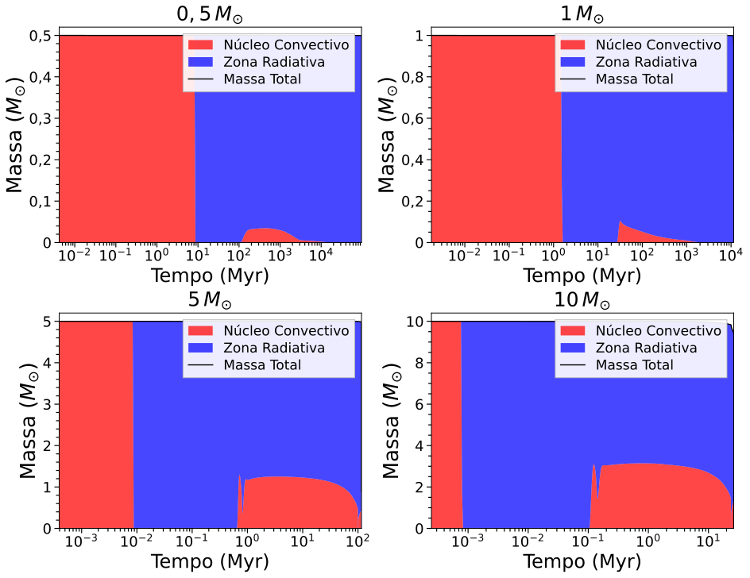
As estrelas de baixa massa exibem um padrão dominado por envelopes convectivos durante grande parte da evolução. Para o caso de \(0{,}5\,\mathrm M_{\odot}\), essa região convectiva profunda decorre da opacidade elevada e da ionização parcial do hidrogênio, que favorecem a ineficiência do transporte radiativo nas camadas superficiais (Chabrier & Baraffe, 2000; Kippenhahn, Weigert & Weiss, 2012). O núcleo permanece essencialmente radiativo, refletindo temperaturas centrais ainda moderadas e gradientes mais suaves.
À medida que a massa aumenta (1–5 M\(_{\odot}\)), o envelope torna-se progressivamente menos profundo. O aumento da temperatura central reduz a opacidade e torna o transporte radiativo mais eficiente, permitindo que a convecção restrinja às regiões externas. A estrela de \(1\,\mathrm M_{\odot}\) representa esse regime clássico: núcleo radiativo durante a sequência principal e envelope convectivo superficial, que se aprofunda na fase de gigante durante o first dredge-up (Paxton et al., 2011). Em 5–10 M\(_{\odot}\), a eficiência crescente do transporte radiativo favorece a diminuição do envelope convectivo, enquanto regiões convectivas internas podem surgir associadas a gradientes de composição e à ignição de hélio.
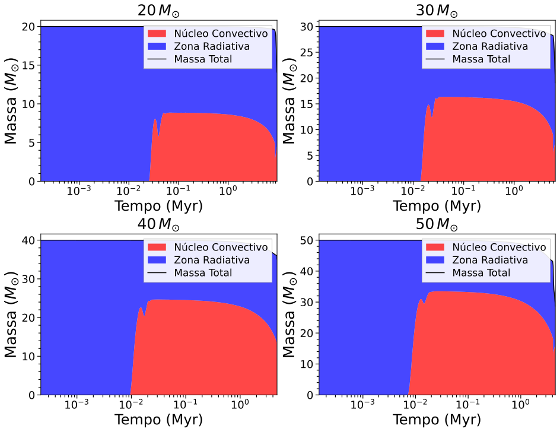
Em massas elevadas a estrutura interna é tipicamente dominada por núcleos convectivos extensos. As figuras mostram frações convectivas internas crescentes (aprox.: \(\sim7\%\) em 20 M\(_{\odot}\), \(\sim17\%\) em 30 M\(_{\odot}\), \(\sim30\%\) em 50 M\(_{\odot}\)), embora variações não-monótonas ocorram (p.ex. redução em 40 M\(_{\odot}\)) devido à interação entre perda de massa, gradientes de composição e rotação. A razão física é a sensibilidade extrema do ciclo CNO à temperatura (\(\epsilon_{\rm CNO}\propto T^{15-20}\)): maiores temperaturas centrais geram gradientes radiativos acentuados que só a convecção consegue remover, formando grandes núcleos convectivos (Maeder, 2009; Hirschi et al., 2005).
Além disso, os ventos radiativos (visíveis na linha da massa total nas figuras) removem camadas externas, alteram gradientes de \(\mu\) e podem expor camadas interiores, modificando tanto a extensão das zonas convectivas quanto os yields (rendimentos nucleossintéticos finais, isto é, as quantidades de cada elemento/isótopo produzidas e ejetadas pela estrela). Essas interações explicam a rápida evolução (tempos de vida curtos) e a complexidade estrutural nas massas maiores (Vink et al., 2001; Langer, 2012).
As diferenças na arquitetura convectiva têm consequências diretas para:
Podemos concluir que a comparação entre as massas \(0{,}5\), \(1\), \(5\) e \(10\,\mathrm M_{\odot}\) confirma a regra prática: estrelas muito leves apresentam envelopes fortemente convectivos e evolução lenta; a estrela solar tem núcleo radiativo e envelope convectivo; estrelas intermediárias/massivas desenvolvem núcleos convectivos significativos e evoluem rapidamente. Detalhes quantitativos (extensão exata da convecção, presença de conchas, variações não-monótonas) dependem de perda de massa, gradientes de composição e rotação — processos incluídos nos modelos MESA usados para gerar as figuras (Paxton et al., 2011; Kippenhahn, Weigert & Weiss, 2012; Maeder, 2009).
A inclusão dos efeitos de rotação e metalicidade permite avaliar modificações relevantes nas taxas de perda de massa. As figuras a seguir apresentam, respectivamente, as taxas instantâneas de perda de massa e os principais episódios evolutivos responsáveis pela ejeção de material ao longo da vida estelar.
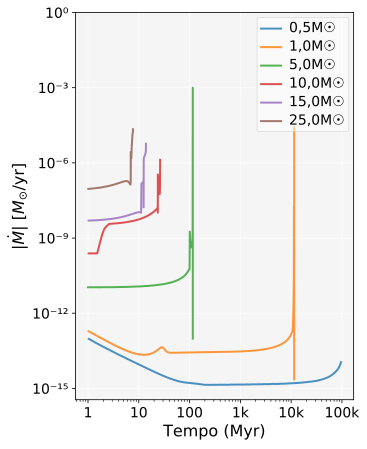
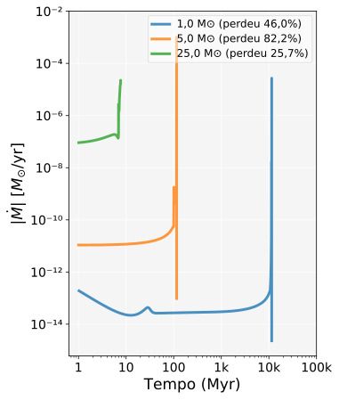
Regime de baixa massa e fase AGB. Em estrelas de baixa massa, a perda de massa é mínima durante a sequência principal, refletindo sua baixa luminosidade e ventos pouco eficientes. Para \(1\,\mathrm M_{\odot}\), a taxa de perda permanece reduzida até as fases avançadas, quando atinge valores da ordem de \(10^{-5}\,\mathrm M_{\odot}\,\mathrm{yr}^{-1}\). O valor final da massa ejetada (\(0{,}46\,\mathrm M_{\odot}\)) é compatível com modelos evolutivos de estrelas solares.
Estrelas de massa intermediária exibem os maiores valores absolutos de perda de massa. Para \(5\,\mathrm{M}_{\odot}\), observa-se um pico de \({\sim}10^{-3}\,\mathrm{M}_{\odot}\,\mathrm{yr}^{-1}\) ao longo da evolução. Esses valores refletem a ação de ventos intensos durante fases de supergigantes e AGB (do inglês Asymptotic Giant Branch, ou Ramo Assintótico das Gigantes — fase evolutiva avançada e luminosa, posterior à queima central de hélio, na qual a estrela possui um núcleo degenerado de carbono e oxigênio circundado por camadas de queima de hélio e hidrogênio), operando em escalas de tempo curtas (\({\sim}10^{6}\) anos para as fases EAGB e TPAGB combinadas).
Ventos de estrelas massivas (regime OB e supergigante). Nas estrelas massivas (\(10\)–\(25\,\mathrm M_{\odot}\)), a perda de massa apresenta uma dependência mais complexa. Embora a estrela de \(10\,\mathrm M_{\odot}\) perca apenas cerca de \(0{,}59\,\mathrm M_{\odot}\), as de \(15\,\mathrm M_{\odot}\) e \(25\,\mathrm M_{\odot}\) atingem perdas totais de \(3{,}12\) e \(6{,}41\,\mathrm M_{\odot}\), respectivamente. Essa diferença advém da ação combinada de ventos radiativos e da rápida evolução para estados luminosos, em que tais ventos se tornam altamente eficientes.
Efeito da Metalicidade.
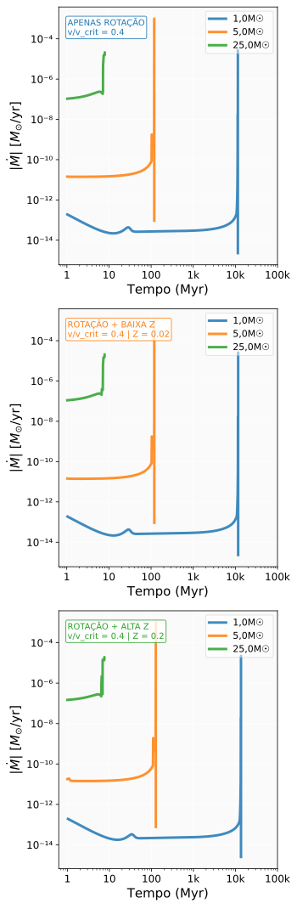
A inclusão de rotação e metalicidade permite uma análise mais realista dos ventos estelares, já que ambos os fatores alteram de maneira significativa a eficiência da perda de massa. A figura acima apresenta uma comparação entre três configurações: rotação com \(v/v_{\text{crit}} = 0{,}4\), rotação com metalicidade quase-solar (\([\mathrm{Fe/H}] = +0{,}02\), \(Z \approx 0{,}015\)) e rotação com alta metalicidade (\([\mathrm{Fe/H}] = +0{,}20\), \(Z \approx 0{,}022\), \({\approx}1{,}6\times\) a metalicidade solar).
Para estrelas de baixa massa, a metalicidade elevada reduz a taxa máxima de perda de massa em aproximadamente \(18{,}5\%\). Nesse regime, os ventos são governados por prescrições empíricas e pulsacionais que não dependem explicitamente de \(Z\): a prescrição de Reimers (1975) (RGB) e a de Bloecker (1995) (TPAGB) nos modelos MIST, e a prescrição de de Jager et al. (1988) (Dutch) no inlist MESA para ventos frios. Em contraste com a lei de Vink et al. (2001), nenhuma dessas prescrições contém \(Z\) como parâmetro direto de força do vento: a influência de \(Z\) sobre \(\dot{M}\) manifesta-se indiretamente, por meio de variações na opacidade e na estrutura estelar.
A estrela de \(5\,\mathrm M_{\odot}\), que apresenta a maior perda percentual entre todos os casos analisados (\(82{,}54\%\)), mostra pouca sensibilidade à metalicidade no valor máximo de \(\dot{M}\). A diferença mais notável é temporal: o pico de perda ocorre cerca de \(2\) milhões de anos mais cedo para \([\mathrm{Fe/H}] = +0{,}20\). Isto sugere que, para esta faixa de massa, os mecanismos de perda são dominados por processos relacionados à luminosidade e estrutura interna, sendo menos sensíveis às variações de composição química.
Para a estrela mais massiva analisada, a alta metalicidade reduz a taxa máxima de perda em cerca de \(14\%\) e diminui a perda total em \(8{,}5\%\). Esse resultado pode parecer contraditório com a relação \(\dot{M}\propto Z^{0{,}6\text{–}0{,}9}\) (Vink et al., 2001), que prevê dependência positiva no regime de ventos de linhas (fases OB e supergigante quente). A aparente contradição resolve-se ao reconhecer que: (a) a lei \(\dot{M}\propto Z^{0{,}6\text{–}0{,}9}\) se aplica especificamente às fases quentes; em fases de supergigante fria (RSG) e avançadas, outros mecanismos governam a ejeção com diferente dependência em \(Z\); (b) a comparação é feita à mesma idade estelar — não ao mesmo ponto evolutivo equivalente (EEP) — de modo que a estrela de maior metalicidade pode estar em fase estruturalmente distinta no mesmo instante. Observações empíricas e estudos de modelagem confirmam que ambientes com maior abundância de metais favorecem a absorção de fótons por íons pesados e, portanto, aumentam a força do vento; por outro lado, em certos regimes (ex.: aproximação do limite de Eddington, efeitos de clumping e mudanças na estrutura do envelope) a resposta não é linear (Vink et al., 2001; Mokiem et al., 2007; Puls et al., 2008).
Em síntese, a dependência de \(\dot{M}\) com a metalicidade é regime-dependente: positiva (\(\dot{M}\propto Z^{0{,}6\text{–}0{,}9}\)) no regime OB/supergigante quente, e mais fraca ou indireta em estrelas de baixa massa e fases AGB/RSG, onde prescrições empíricas e pulsacionais dominam sem escalonamento explícito com \(Z\).
Efeito da Rotação. A rotação atua como
intensificadora dos ventos estelares, sobretudo nas fases em que a
interação entre achatamento rotacional e opacidade se torna relevante.
Nos modelos MIST analisados, a taxa de rotação é inicializada em
\(v/v_\mathrm{crit}=0{,}40\) na ZAMS e evolui ao longo da sequência
principal. A auditoria direta da coluna
surf_avg_v_div_v_crit nas trilhas rotacionais confirma
esse comportamento para estrelas de \(8\)–\(25\,\mathrm M_\odot\): a
razão cai ligeiramente para \({\approx}0{,}39\) no início da SM (perda
superficial de momento angular por ventos) e cresce até
\(0{,}46\)–\(0{,}57\) no TAMS, pois a expansão do envelope reduz
\(v_\mathrm{crit}=\sqrt{GM/R}\) mais rapidamente do que
\(v_\mathrm{rot}\) decresce. O valor \(v/v_\mathrm{crit}=0{,}40\) deve
ser entendido, portanto, como condição de contorno na ZAMS, não como
parâmetro constante ao longo de toda a evolução. Embora a rotação
afete também a estrutura interna e o transporte de momento angular,
sua influência direta sobre a perda de massa manifesta-se
principalmente como modulação da taxa, sobrepondo-se aos efeitos
primários de massa e luminosidade.
Taxa instantânea de perda e massa total ejetada. Os resultados revelam três regimes distintos: (i) estrelas de baixa massa apresentam picos tardios associados às fases de gigante; (ii) estrelas intermediárias passam por episódios intensos e concentrados de perda de massa; (iii) estrelas massivas perdem massa ao longo de grande parte da evolução, com múltiplos picos distribuídos temporalmente.
A Figura 16 evidencia que a eficiência total de perda de massa (massa ejetada/massa inicial) ultrapassa \(80\%\) para \(5\,\mathrm M_{\odot}\), enquanto atinge cerca de \(25\%\) para \(25\,\mathrm M_{\odot}\). Essa não-monotonicidade reflete a cobertura evolutiva das trilhas: a trilha de \(5\,\mathrm M_{\odot}\) percorreu fases mais avançadas (incluindo as fases EAGB e TPAGB, onde a perda de massa é intensa), enquanto a trilha de \(25\,\mathrm M_{\odot}\) abrange estágios anteriores ao colapso do núcleo, com ventos relativamente menos eficientes nessas etapas. Esses resultados mostram que a perda de massa não escala linearmente com a massa inicial, mas depende das propriedades estruturais e das fases evolutivas específicas de cada estrela.
Uma "sala de controle" que sintetiza toda a Seção 3: escolha uma massa (ou a simulação MESA real de 50 M☉) e mova o slider de fase para ver a posição no diagrama HR, \(T_{\rm eff}\), \(L\), \(R\), \(T_c\), \(\rho_c\) e o processo nuclear dominante mudarem juntos. Reconstrução esquemática: cada preset interpola (log-linearmente) apenas entre dois pontos explicitamente citados no texto — não é a trilha MIST/MESA real ponto a ponto (exceto os dois extremos, que são exatos). Onde o texto não dá um número, o painel mostra "—" em vez de inventar um valor.
fase: 0,00 (0=início, 1=final) processo dominante: — \(T_{\rm eff}=\)— K \(\log(L/L_\odot)=\)— \(R=\)— R☉ \(T_c=\)— K, \(\rho_c=\)— g/cm³
—
O Diagrama de Kiel (\(\log\) g \(\times\) \(\log\) \(T_{eff}\)) constitui uma ferramenta complementar ao Diagrama HR para o estudo da evolução estelar, especialmente em contextos observacionais onde a luminosidade absoluta é difícil de determinar. A gravidade superficial, definida por
\[ g = \frac{GM}{R^2}\,, \tag{11.5} \]permite inferir o raio estelar diretamente, fornecendo informações estruturais essenciais quando combinada com a temperatura efetiva (Paxton et al., 2011; Langer et al., 2014).
Diferentemente do Diagrama HR, que depende de luminosidade e portanto de distância, o Diagrama de Kiel utiliza grandezas obtidas diretamente por espectroscopia, tornando-o especialmente útil no estudo de populações distantes ou com incertezas de paralaxe.
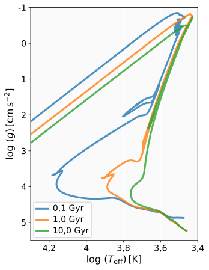
A figura acima apresenta isócronas para metalicidade solar (\(Z_{\odot}\)) nas idades de 0,1, 1 e 10 Gyr, revelando padrões característicos da evolução estelar. Para a isócrona de 0,1 Gyr, observa-se uma sequência principal bem definida na região de altas gravidades superficiais e temperaturas efetivas elevadas, correspondendo a estrelas jovens em fase de queima de hidrogênio.
O ponto de turn-off fornece a principal assinatura da idade de um aglomerado. Para idades da ordem de 1 Gyr, o turn-off situa-se em torno de \(\log(T_{\rm eff}) \approx 3{,}8\)–\(3{,}9\), indicando massas típicas de 1,5–2,5 \(\mathrm M_{\odot}\). Para idades da ordem de 10 Gyr, o turn-off desloca-se para regiões mais frias e com gravidades mais baixas, evidenciando que apenas estrelas de baixa massa permanecem na sequência principal. Esse deslocamento caracteriza o consumo do hidrogênio central e marca o início da evolução para o ramo das gigantes vermelhas.
A isócrona de 10 Gyr exibe características de uma população estelar evoluída, com: uma sequência principal restrita a estrelas de baixa massa (\(\log T_{\mathrm{eff}} < 3{,}7\)); um ramo de gigantes vermelhas bem desenvolvido na região de baixas gravidades (\(\log g < 3\)); e o turn-off deslocado para temperaturas mais baixas (\(\log T_{\mathrm{eff}} \approx 3{,}7\)).
A evolução das curvas isócronas no Diagrama de Kiel reflete mudanças fundamentais na estrutura estelar: estrelas na sequência principal ocupam a região de altas gravidades superficiais; a expansão do envelope durante as fases de gigante resulta em uma drástica redução em \(\log g\); e o deslocamento horizontal nas curvas corresponde ao resfriamento superficial durante a evolução.
A aplicação prática deste diagrama inclui a determinação de idades de aglomerados estelares através do ajuste de isócronas a dados observacionais, além da caracterização de parâmetros atmosféricos estelares. A sensibilidade do turn-off à idade torna o Diagrama de Kiel particularmente útil para estudos de evolução estelar e arqueologia galáctica. Este método de datação é estabelecido na literatura e constitui uma das principais ferramentas da arqueologia galáctica moderna (Gallart et al., 2005; Deason & Belokurov, 2024).
Este módulo não usa dados MIST reais (não encontrados como arquivo local neste projeto — apenas as figuras já renderizadas em PDF) — é uma reconstrução puramente esquemática (sequência principal + ramo de gigantes de forma simplificada), calibrada apenas para ilustrar o conceito de como o turn-off se desloca com a idade, não para reproduzir as isócronas MIST reais mostradas nas figuras acima. Link cruzado: a mesma lógica de hierarquia de escalas de tempo (massas maiores evoluem mais rápido) já foi usada no Capítulo 5 para conectar turn-off à datação de aglomerados.
Massa (esquemática) no turn-off: — M☉.
A metalicidade é um dos parâmetros fundamentais que modulam a estrutura interna das estrelas, alterando opacidades, eficiências nucleares e a própria morfologia das isócronas. Ela é frequentemente expressa pela quantidade \([\mathrm{Fe/H}] = \log_{10}(N_{\mathrm{Fe}}/N_{\mathrm{H}})_{\star} - \log_{10}(N_{\mathrm{Fe}}/N_{\mathrm{H}})_{\odot}\), isto é, o logaritmo da razão entre o número de átomos de ferro e de hidrogênio na estrela, comparado ao mesmo valor para o Sol. Por se tratar de uma escala logarítmica relativa, \([\mathrm{Fe/H}] = 0\) corresponde à metalicidade solar, valores negativos indicam estrelas mais pobres em metais que o Sol (por exemplo, \([\mathrm{Fe/H}] = -1\) corresponde a \(1/10\) da abundância de ferro solar), e valores positivos indicam estrelas mais ricas em metais que o Sol (por exemplo, \([\mathrm{Fe/H}] = +0{,}5\) corresponde a cerca de \(10^{0{,}5} \approx 3{,}16\) vezes a abundância solar). Para uma mesma idade, variações em [Fe/H] deslocam sistematicamente as estrelas no plano \(\log g\)–\(\log T_{\mathrm{eff}}\), o que nos permite estudar de forma comparativa populações estelares pertencentes a diferentes ambientes galácticos.
A análise do efeito da metalicidade na evolução estelar ajuda a visualizar padrões na estrutura e desenvolvimento das estrelas em detrimento da sua composição química, que vai além do hidrogênio e do hélio. A figura a seguir apresenta isócronas para idade fixa de 4 Giga-anos com quatro diferentes metalicidades: [Fe/H] = \(-2\), \(-1\), \(0\) e \(+0{,}5\), permitindo observar como a composição química influencia a posição das estrelas no Diagrama de Kiel.
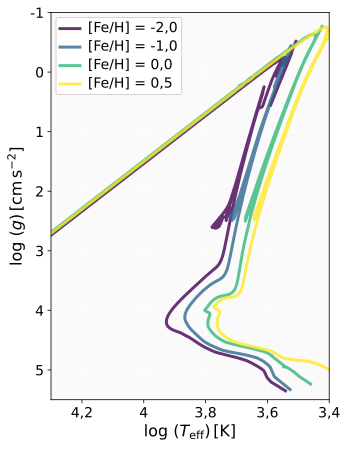
Os resultados mostram um deslocamento sistemático das curvas isócronas em função da metalicidade. Estrelas pobres em metais ([Fe/H] = \(-2\)) ocupam a região de maiores temperaturas efetivas, enquanto estrelas com alta metalicidade ([Fe/H] = \(+0{,}5\)) situam-se em temperaturas efetivas mais baixas. Este comportamento decorre do aumento da opacidade com o conteúdo metálico: metais introduzem numerosas linhas e absorções contínuas que dificultam o transporte radiativo. Com a energia acumulando-se mais eficientemente nas camadas internas, a estrutura ajusta-se expandindo ligeiramente o envelope e reduzindo \(T_{\mathrm{eff}}\) para manter o equilíbrio hidrostático. Assim, para uma mesma idade e massa, estrelas ricas em metais aparecem mais frias no Diagrama de Kiel.
A gravidade superficial (\(\log g\)) permanece dentro de faixas semelhantes para todas as metalicidades, mas a distribuição ao longo da sequência principal varia. Em baixa metalicidade, a menor opacidade produz estrelas mais compactas, resultando em valores ligeiramente mais altos de \(\log g\) para uma mesma fase evolutiva. Já metalicidades elevadas favorecem envelopes mais expandidos e valores ligeiramente menores de \(\log g\), especialmente próximo ao turn-off.
As implicações astrofísicas são que populações pobres em metais, como as de aglomerados globulares, apresentam isócronas deslocadas para temperaturas mais altas, enquanto populações mais jovens e metalicamente enriquecidas — típicas do disco galáctico, por exemplo — ocupam regiões mais frias do diagrama. Assim, a interpretação de \(\log g\) e \(T_{\mathrm{eff}}\) deve sempre considerar o conteúdo químico, pois a degenerescência idade–metalicidade pode levar a estimativas incorretas se o ajuste de isócronas negligenciar o efeito da composição.
Nesta subseção analisamos o efeito da idade na morfologia das isócronas para uma metalicidade fixa. Como a idade controla diretamente a posição do ponto de turn-off e a extensão do ramo das gigantes, a comparação entre isócronas de 1, 4, 7 e 10 Gyr permite visualizar de forma clara como populações estelares de mesma composição química, mas em diferentes estágios evolutivos, distribuem-se no Diagrama de Kiel.
A progressão das isócronas com a idade segue um padrão universal: (i) o turn-off desloca-se para temperaturas efetivas menores; (ii) o ramo das gigantes torna-se mais extenso; e (iii) a sequência principal encurta-se, refletindo a ausência de estrelas de maior massa que já evoluíram para fases avançadas. Estes padrões aparecem em todas as metalicidades, mas sua intensidade depende fortemente do conteúdo metálico.
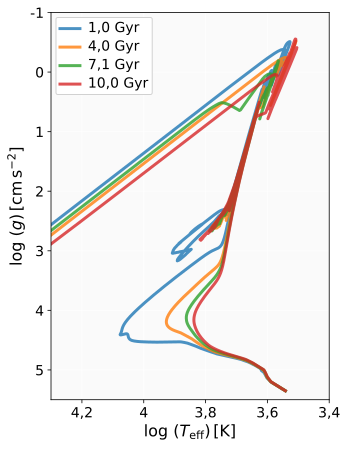
Para a metalicidade extremamente baixa ([Fe/H] = \(-2\)), as isócronas apresentam uma sequência principal estreita e quente, característica de baixa opacidade. O ponto de turn-off desloca-se para temperaturas progressivamente menores com o aumento da idade, e o ramo das gigantes torna-se mais pronunciado, embora mais compacto que em metalicidades maiores devido à menor expansão do envelope.
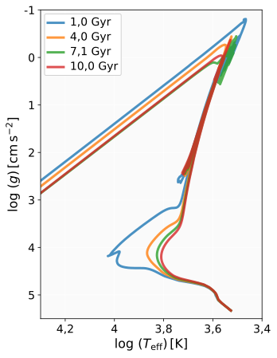
Para \([Fe/H] = -1\), observa-se o mesmo padrão geral, mas com um resfriamento global em comparação à metalicidade mais baixa. As isócronas tornam-se ligeiramente mais largas e o ramo das gigantes mais extenso, refletindo maior opacidade e maior eficiência de expansão do envelope. A isócrona de 10 Gyr exibe um turn-off mais frio e deslocado verticalmente, indicando uma evolução estrutural mais avançada.
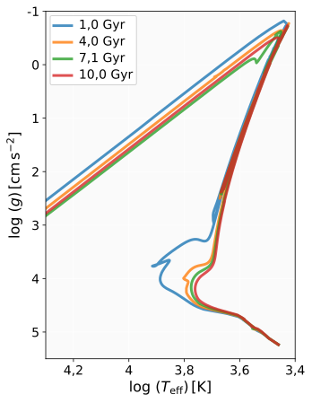
Na metalicidade solar ([Fe/H] = 0), as isócronas tornam-se mais dispersas na sequência principal e o ramo das gigantes é mais estendido para todas as idades. O turn-off das isócronas mais velhas aparece consideravelmente resfriado em relação aos casos pobres em metais, consequência direta da maior opacidade que retarda a evolução e favorece envelopes mais expandidos.
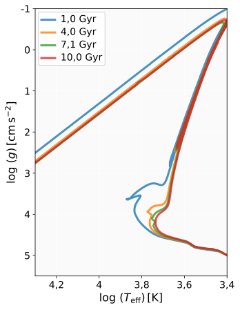
Para a alta metalicidade ([Fe/H] = +0,5), observa-se o deslocamento mais pronunciado para temperaturas efetivas reduzidas. A sequência principal apresenta forte dispersão vertical e horizontal, especialmente em idades avançadas, devido à combinação entre alta opacidade e estruturas internas menos compactas. O ramo das gigantes torna-se significativamente expandido e mais frio, destacando o efeito cumulativo da metalicidade sobre a evolução estelar. Estes efeitos estão amplamente documentados em modelos evolutivos modernos, como nas isócronas PARSEC (Bressan et al., 2012).
Assim, a evolução das isócronas com a idade fornece um diagnóstico direto da evolução temporal de populações estelares, enquanto a comparação entre metalicidades revela como diferenças na opacidade modulam trajetórias evolutivas. O Diagrama de Kiel torna-se, portanto, uma ferramenta essencial para caracterizar idades, massas e estágios evolutivos de estrelas em distintos ambientes galácticos.
O ajuste de isócronas a aglomerados estelares é uma das principais ferramentas observacionais para determinação de idades: escolhe-se a isócrona teórica cuja posição do ponto de turn-off no diagrama HR (ou de Kiel) coincide com a do aglomerado observado. Os arquivos de isócrona MIST utilizados neste trabalho (para \([\mathrm{Fe/H}] \in \{-2{,}0;\ -1{,}0;\ 0{,}0;\ +0{,}5\}\)) são os mesmos que seriam empregados nessa análise, e estão disponíveis no portal do projeto (Dotter, 2016). O leitor pode, a partir dos diagramas de Kiel apresentados nas figuras anteriores, explorar o procedimento de ajuste combinando as isócronas MIST com dados fotométricos de aglomerados reais obtidos de catálogos públicos.
Nesta seção descrevemos o modelo de evolução estelar utilizado nas
simulações. Para isso, empregamos o código MESA versão
r23.05.1, adotando como caso de estudo uma estrela massiva de
\(50\,\mathrm M_{\odot}\) com metalicidade solar (\(Z=0{,}02\)). A
escolha de uma estrela de alta massa permite explorar fenômenos
característicos desse regime — como ventos radiativos intensos, tempos
de vida curtos e evolução estrutural acelerada — em contraste com a
evolução mais lenta típica de estrelas de menor massa.
A evolução de uma estrela é descrita por um sistema de equações diferenciais acopladas que governam sua estrutura interna e evolução temporal. Essas equações expressam as condições de equilíbrio hidrostático, conservação de massa, transporte de energia e conservação de energia no interior estelar (Kippenhahn, Weigert & Weiss, 2012). Em coordenada de massa \(m(r)\), as equações fundamentais podem ser escritas como
\[ \frac{dP}{dm} = -\frac{Gm}{4\pi r^4}\,, \tag{11.6} \]representando a condição de equilíbrio hidrostático, estabelecendo o balanço entre o gradiente de pressão e a força gravitacional.
\[ \frac{dr}{dm} = \frac{1}{4\pi r^2 \rho}\,, \tag{11.7} \]que expressa a conservação de massa e relaciona o raio da camada estelar com sua densidade local.
\[ \frac{dL}{dm} = \epsilon_{\rm nuc} - \epsilon_\nu\,, \tag{11.8} \]que descreve a conservação de energia, onde \(\epsilon_{\rm nuc}\) representa a taxa de geração de energia por reações nucleares e \(\epsilon_\nu\) a perda de energia por emissão de neutrinos.
Por fim, o transporte de energia no interior da estrela pode ocorrer por radiação ou convecção. No regime radiativo, o gradiente de temperatura é dado por
\[ \frac{dT}{dm} = -\frac{3 \kappa L}{64 \pi^2 a c r^4 T^3}\,, \tag{11.9} \]cujo \(\kappa\) é a opacidade do plasma estelar, \(a\) é a constante de radiação e \(c\) é a velocidade da luz.
A integração numérica dessas equações, combinada com equações de
estado apropriadas, tabelas de opacidade e redes de reações nucleares,
permite determinar a estrutura interna da estrela e sua evolução ao
longo do tempo. Códigos modernos de evolução estelar, como o
MESA (Modules for Experiments in Stellar
Astrophysics), resolvem esse sistema incorporando uma descrição
detalhada da física estelar (Paxton et al., 2011).
As quatro equações apresentadas acima são exatamente as
quatro equações fundamentais de estrutura estelar
deduzidas em detalhe no Capítulo
5: equilíbrio hidrostático (\(\mathrm dP/\mathrm dm\)),
conservação de massa (\(\mathrm dr/\mathrm dm\)), conservação de
energia (\(\mathrm dL/\mathrm dm\), com \(\epsilon_{\rm nuc}\) dado
pelas taxas de reação já discutidas) e transporte radiativo
(\(\mathrm dT/\mathrm dm\), na forma de difusão de fótons já
obtida a partir da Aproximação de Rosseland naquele mesmo bloco de
capítulos). O que o MESA faz — e que este capítulo
ilustra na prática — é justamente integrar numericamente esse
sistema, acoplado a uma equação de estado (que pode incluir os
regimes degenerados do Capítulo
8) e a uma rede de reações nucleares, para milhares de passos
temporais ao longo da vida de uma estrela. Vale notar ainda que
modelos politrópicos como os deduzidos no
Capítulo 6 (equação
de Lane–Emden) continuam relevantes mesmo na era dos códigos
numéricos: o MESA os usa como modelo inicial
(initial guess) para relaxar a estrutura de uma estrela
pré-sequência principal antes de iniciar a evolução completa.
No presente trabalho, o modelo foi evoluído desde uma idade inicial de \(1\,\mathrm{Myr}\) até aproximadamente \(5{,}24\,\mathrm{Myr}\), resultando em 333 modelos sucessivos. Esse intervalo cobre a sequência principal tardia e as fases iniciais de expansão do envelope rumo ao estágio de supergigante, antes do início da queima avançada de elementos mais pesados.
A configuração utilizada no arquivo inlist
(disponibilizado no Apêndice A) incluiu os seguintes parâmetros
fundamentais:
MESA para supergigantes frias e
fases avançadas;overshoot_f(1) = 0,02 e
overshoot_f0(1) = 0,01 (ver inlist no Apêndice
A).MESA r23.05.1 (Paxton et al.,
2011).basic.net (padrão do
MESA), que inclui as reações nucleares relevantes para
a sequência principal de estrelas massivas (pp, CNO, triplo-\(\alpha\)
e captura de \(\alpha\)).O uso combinado das prescrições de Vink e do esquema Dutch é justificado pela forte dependência dos ventos de estrelas massivas à temperatura efetiva. Ventos radiativos dominam as fases quentes (\(T_{\mathrm{eff}} \gtrsim 2{,}5\times10^4\) K), enquanto ventos empíricos de supergigantes tornam-se mais adequados quando o envelope se expande e a estrela se torna mais fria. Essa abordagem híbrida é adotada pela comunidade para reproduzir de forma consistente a perda de massa ao longo de todo o ciclo evolutivo de estrelas de alta massa.
A evolução ocorre de forma extremamente rápida: a estrela completa todas as fases simuladas em apenas \(5{,}24\,\mathrm{Myr}\), valor consistente com o esperado para estrelas de \(40\)–\(60\,\mathrm M_{\odot}\).
A análise quantitativa obtida a partir do arquivo
history.data revela:
A massa inicial determina o destino da estrela. Estrelas com \(M < 8\,\mathrm M_{\odot}\) evoluem para anãs brancas, expondo núcleos de He, C/O ou O/Ne. Para massas intermediárias (8–25 M\(_{\odot}\)), o colapso gravitacional leva à explosão de supernova tipo II e à formação de estrelas de nêutrons. Estrelas mais massivas podem formar buracos negros via colapso direto ou com queda de material (fallback), em concordância com modelos recentes de colapso de núcleo (Griffiths et al., 2025).
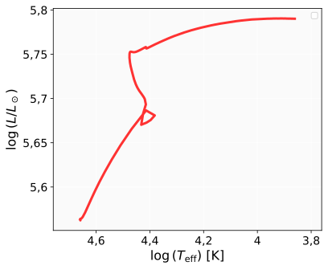
A figura acima mostra que a estrela começa sua evolução com \(\log(T_{\mathrm{eff}})\approx 4{,}66\) e \(\log(L/L_{\odot})\approx 5{,}56\), evoluindo rapidamente para temperaturas mais baixas enquanto a luminosidade aumenta de forma contínua. Este comportamento é típico de estrelas massivas que deixam a sequência principal após esgotarem o hidrogênio central.
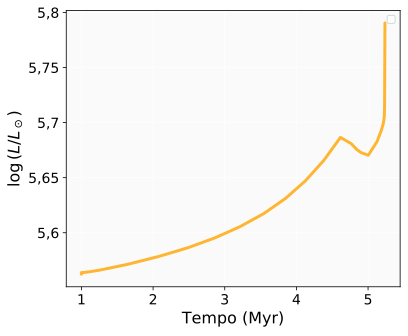
De acordo com a figura acima, a luminosidade aumenta de \(\log(L/L_\odot) = 5{,}56\) para \(5{,}79\) ao longo de 5,2 Myr, um crescimento de aproximadamente 70%. Esse comportamento é típico de estrelas massivas na sequência principal e início da fase de supergigante: conforme o hidrogênio central é consumido, o núcleo se contrai e aquece, aumentando a taxa de queima nuclear.
Como o tempo de vida nuclear de uma estrela de 50 M\(_\odot\) é extremamente curto, mesmo mudanças relativamente pequenas na abundância central de hidrogênio resultam em aumentos perceptíveis de luminosidade.
Além disso, outros parâmetros físicos podem influenciar significativamente a evolução de estrelas massivas. A rotação estelar, por exemplo, pode prolongar o tempo de vida na sequência principal por meio de processos de mistura rotacional, que transportam hidrogênio fresco para o núcleo e trazem produtos da queima nuclear para a superfície. Esse processo pode levar ao enriquecimento superficial de elementos como nitrogênio.
A metalicidade também desempenha um papel fundamental, pois controla a intensidade dos ventos estelares radiativamente dirigidos. Em estrelas massivas, ventos mais intensos podem remover uma fração significativa da massa estelar ao longo da evolução, alterando a estrutura interna da estrela e influenciando significativamente seu destino final.
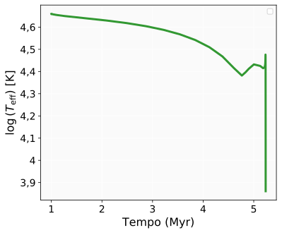
A temperatura efetiva diminui de \(\log(T_{\mathrm{eff}})=4{,}66\) (\(\approx\)46000 K) para \(3{,}86\) (\(\approx\)7200 K), o que representa um resfriamento superficial de quase uma ordem de grandeza.
Esse comportamento reflete diretamente a expansão do envelope. Embora o núcleo se torne mais luminoso ao contrair-se, a superfície estelar se afasta do centro, aumentando enormemente a área irradiadora. Assim, a maior luminosidade é compensada pela queda de temperatura, em concordância com a relação de Stefan–Boltzmann. A trajetória no diagrama HR confirma essa tendência: a estrela migra da região quente, de tipo espectral O, para o domínio das supergigantes amarelas/vermelhas à medida que o envelope se dilata.
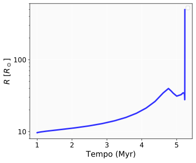
O raio aumenta de 9,7 R\(_\odot\) para 497 R\(_\odot\), um fator de expansão de aproximadamente 51 vezes. Esse crescimento abrupto é característico da fase de transição entre a sequência principal e a fase de supergigante vermelha.
O comportamento exponencial do crescimento sugere que a estrela está próxima de regimes avançados de evolução, nos quais a estrutura passa a ser fortemente influenciada por gradientes acentuados de energia e pressão de radiação.
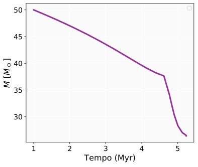
Na figura acima, analisamos a perda de massa, que é dominada por ventos radiativos descritos pelo formalismo de Vink et al. (2001). Como consequência, a massa final (26,4 M\(_\odot\)) coloca a estrela no regime típico de pré-Wolf–Rayet ou supergigante evoluída, evidenciando que a perda de massa é um dos processos-chave que definem o destino final da estrela.
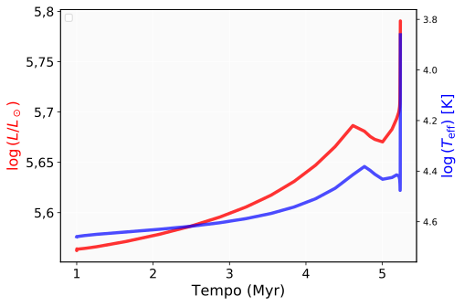
A timeline ressalta o comportamento inverso entre luminosidade e temperatura. Enquanto a luminosidade cresce continuamente devido à contração do núcleo e ao aumento da taxa de queima, a temperatura superficial diminui de forma pronunciada. Essa relação é uma assinatura clássica da evolução de estrelas massivas e está em perfeita concordância com os diagramas HR observados e simulados.
O diagrama de Kippenhahn (figura a seguir) revela a estrutura interna da estrela ao longo da evolução.
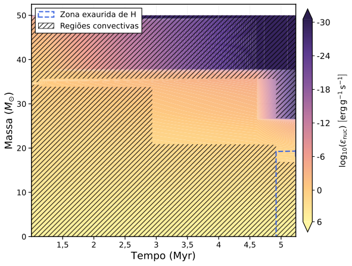
Durante toda a sequência principal, um núcleo convectivo extenso se mantém, característico de estrelas massivas nas quais a queima de hidrogênio ocorre pelo ciclo CNO, extremamente sensível à temperatura. Conforme o hidrogênio central se esgota, a estrela desenvolve queima de hidrogênio em camada, visível como zonas de geração de energia imediatamente acima do núcleo inerte de He.
A perda de massa progressiva empurra as linhas de coordenada de massa para baixo, evidenciando que o envelope está sendo removido continuamente pelos ventos intensos. Nas fases mais tardias, a estrutura interna torna-se mais complexa, com múltiplas regiões de queima e fronteiras convectivas transitórias, prenunciando a entrada na fase de supergigante.
Esse diagrama é crucial porque confirma, no interior, os fenômenos inferidos a partir dos diagramas HR, das curvas de raio e das curvas de temperatura.
As simulações conduzidas com o MESA permitem caracterizar de forma consistente a evolução de uma estrela massiva de \(50\,\mathrm M_{\odot}\) ao longo de seus primeiros \(5{,}2\) milhões de anos. O modelo discutido nesta seção sintetiza a visão contemporânea da evolução estelar, na qual a massa inicial estabelece o regime nuclear dominante, enquanto a composição química, a rotação e a perda de massa modulam as propriedades estruturais e o destino final da estrela. Essas conclusões são coerentes com resultados obtidos por códigos modernos de evolução estelar descritos na literatura.
O modelo captura adequadamente os principais mecanismos estruturais e nucleares que governam a trajetória evolutiva desse tipo de objeto, reproduzindo tendências esperadas para estrelas dominadas por pressão de radiação e ventos radiativos intensos. Os resultados obtidos evidenciam:
É importante ressaltar que a simulação cobre apenas os primeiros \({\sim}5{,}2\) Myr da vida estelar — a sequência principal de hidrogênio e o início da expansão do envelope — e não inclui as fases de queima avançada (He, C, Ne, O, Si) nem o colapso do núcleo. As afirmações sobre Wolf–Rayet, tipo de supernova e formação de remanescentes baseiam-se em extrapolação teórica a partir da massa final simulada (\({\approx}26{,}4\,\mathrm M_{\odot}\)) e em modelos da literatura (Griffiths et al., 2025), e não em resultados diretos desta simulação. Em contextos pedagógicos, é fundamental distinguir o que foi calculado (estrutura interna e evolução até \({\sim}5{,}2\) Myr) do que é previsto pela teoria (destino final). Simulações completas de estrelas massivas até o colapso do núcleo requerem redes nucleares extensas e estabilidade numérica nas fases de queima de Si e O, demandando recursos computacionais significativos (Paxton et al., 2011). Do ponto de vista didático, o intervalo modelado já é suficiente para ilustrar a perda de massa intensa, a expansão do envelope e a transição para o regime de supergigante — fenômenos centrais na evolução de estrelas massivas.
A nucleossíntese compreende os processos responsáveis pela formação dos núcleos atômicos e engloba desde os primeiros minutos após o Big Bang até os eventos explosivos e violentos que encerram a vida de estrelas de diferentes massas. A partir da compreensão dos processos responsáveis pela produção dos diferentes elementos químicos, torna-se possível relacionar diretamente fenômenos astrofísicos a padrões observacionais de abundâncias estelares e galácticas.
A seguir descrevemos, de forma sintética, os principais mecanismos de geração de núcleos, destacando elementos produzidos, ambientes físicos e incertezas associadas. Em cada processo, listamos explicitamente os elementos (número atômico Z e nome) cuja produção é associada de forma significativa a esse processo.
A viabilidade de cada processo de nucleossíntese é determinada pela competição entre a energia cinética térmica dos núcleos e a barreira coulombiana de repulsão eletrostática. Para dois núcleos de números atômicos \(Z_1\) e \(Z_2\) e raio nuclear \(R\sim R_0 A^{1/3}\), a altura da barreira é da ordem de
\[ E_{\rm C} = \frac{Z_1 Z_2 e^2}{R} \approx \frac{Z_1 Z_2}{A^{1/3}}\,\mathrm{MeV}\,, \tag{11.10} \]muito superior à energia térmica típica \(k_{\rm B}T \sim 1\)\,keV nas condições estelares. A fusão ocorre principalmente por tunelamento quântico através dessa barreira, com probabilidade proporcional ao fator de Gamow \(\exp(-2\pi\eta)\), onde \(\eta = Z_1 Z_2 e^2/\hbar v\) (Kippenhahn, Weigert & Weiss, 2012). Por isso, reações entre núcleos mais pesados (maior produto \(Z_1Z_2\)) requerem temperaturas progressivamente mais altas: a queima de H ocorre em \(T\sim10^7\) K, a de He em \({\sim}10^8\) K, e as queimas de C, Ne, O e Si em \(T\sim10^8\)–\(10^9\) K em estrelas massivas.
O módulo de barreira coulombiana e tunelamento já apresentado anteriormente neste capítulo (logo após a discussão da cadeia pp/CNO/triplo-α) usa exatamente a Equação 11.10 acima — role para cima até "Processos de Geração de Energia" para manipular os sliders de \(Z_1Z_2\) e energia.
Esta é exatamente a mesma probabilidade de tunelamento e o mesmo parâmetro de Sommerfeld \(\eta=Z_1Z_2e^2/\hbar v\) deduzidos em detalhe no capítulo de Geração de Energia, incluindo a mesma discussão do pico de Gamow (a competição entre a cauda maxwelliana decrescente e a probabilidade de tunelamento crescente — veja o módulo "Pico de Gamow" logo acima, nesta mesma página). A dependência de \(\eta\) com \(Z_1Z_2\) explica quantitativamente, aqui, por que a nucleossíntese segue uma sequência ordenada de temperaturas — queima de H, depois He, depois elementos progressivamente mais pesados — a mesma lógica física usada naquele capítulo para explicar por que o Sol queima hidrogênio tão devagar.
Ao longo das seções anteriores deste capítulo, \(Z\) designou a fração de massa em metais (\(Z\equiv1-X-Y\), mesma convenção do Capítulo 5). A partir desta seção, retomando a notação padrão de física nuclear, \(Z_1,Z_2\) (e o \(Z\) que acompanha cada elemento na lista abaixo) designam o número atômico de um núcleo — o número de prótons, sem relação direta com a fração de massa metálica da estrela como um todo. Ambas são convenções padrão em suas respectivas subáreas (evolução estelar e física nuclear), e o contexto de cada seção deixa claro qual está em uso; o próprio artigo original já opera com essa dupla convenção, comum na literatura de nucleossíntese.
Nas camadas mais centrais de uma estrela massiva próxima ao colapso, quando \(T\gtrsim4\times10^9\) K e \(\rho\gtrsim10^9\) g cm\(^{-3}\), as reações nucleares tornam-se suficientemente rápidas em ambas as direções para que o sistema atinja o equilíbrio estatístico nuclear (NSE — Nuclear Statistical Equilibrium): a abundância de cada espécie passa a ser determinada apenas pela temperatura, densidade e razão prótons/nêutrons, não mais pela sequência histórica de reações. Nesse regime, a distribuição converge para o pico do ferro (\(^{56}\)Fe, \(^{56}\)Ni, \(^{56}\)Co), pois esses isótopos possuem a maior energia de ligação por núcleon (Woosley & Weaver, 1995). É essa característica que torna o ferro um "fim de linha" para a nucleossíntese por fusão: fundir núcleos mais pesados que o ferro consumiria energia em vez de liberá-la.
Calculado a partir da fórmula semi-empírica de massa (Bethe–Weizsäcker), sem qualquer dado tabelado externo — apenas os termos de volume, superfície, Coulomb, assimetria e emparelhamento, para o caso \(N=Z\) (mais estável para cada \(A\)). O pico em \(A\approx56\) (\(^{56}\)Fe/\(^{56}\)Ni/\(^{56}\)Co) explica por que a fusão libera energia até o ferro e a consome depois — a origem física do equilíbrio NSE discutido acima.
—
Além das reações de fusão hidrostática, dois processos de captura de nêutrons produzem os elementos mais pesados que o ferro. No processo-s (slow neutron capture), a densidade numérica de nêutrons é suficientemente baixa (\(n_{\rm n}\lesssim10^{10}\)\,cm\(^{-3}\)) para que os núcleos produzidos tenham tempo de decair por \(\beta^-\) antes de capturar um novo nêutron, seguindo o "vale de estabilidade" da tabela de núcleos (Käppeler et al., 2011; Busso et al., 1999). No processo-r (rapid neutron capture), a densidade numérica de nêutrons é extremamente elevada (\(n_{\rm n}\gtrsim10^{20}\)\,cm\(^{-3}\)), impedindo o decaimento antes de novas capturas; os núcleos muito ricos em nêutrons resultantes decaem em cascata após o evento (Cowan et al., 2021; Sneden et al., 2008). Essa distinção fundamental — estabelecida de forma seminal por Burbidge, Burbidge, Fowler & Hoyle (1957) — é o princípio organizador dos padrões de abundância dos elementos pesados observados em estrelas e na Galáxia.
Plano N×Z com o vale de estabilidade beta. Um slider de densidade de nêutrons \(n_{\rm n}\) mostra os dois regimes citados no texto: abaixo de \(n_{\rm n}\approx10^{10}\)cm\(^{-3}\), o processo-s (captura→espera→decaimento \(\beta^-\), seguindo de perto o vale); acima de \(n_{\rm n}\approx10^{20}\)cm\(^{-3}\), o processo-r (rajada de capturas rápidas para longe do vale, seguida de cascata de decaimentos \(\beta^-\) de volta). Trajetória e limiares ilustrativos, calibrados apenas para reproduzir corretamente a física qualitativa descrita no texto (picos \(N{\sim}50\), \(N{\sim}82\) e platô do Pb) — não são dados observacionais ou de rede nuclear tabelados.
Regime: processo-s — \(n_n\lesssim10^{10}\) cm⁻³: tempo entre capturas maior que o tempo médio de decaimento β⁻ ("sítios principais confirmados": estrelas AGB).
Segue a lista completa dos mecanismos de nucleossíntese discutidos no texto original, com os respectivos elementos associados a cada processo:
Cada elemento (Z = 1 a 118) colorido pelo(s) processo(s) dominante(s) de nucleossíntese, usando exatamente os dados do Apêndice B (tabela completa reproduzida logo abaixo, no final do capítulo). Clique em um elemento para ver Z, nome, processo(s) e o comentário original da tabela; use o filtro para destacar apenas um processo por vez. Elementos de origem mista (ex.: a faixa Ga–Bi, Z = 31–83) aparecem com cor mesclada, não forçados a um único processo — refletindo que a fração exata de cada via de produção para esses elementos é ainda assunto de pesquisa ativa (Burbidge et al., 1957; Käppeler et al., 2011; Cowan et al., 2021; Nomoto et al., 2013).
A convergência para o pico do ferro descrita acima nas camadas mais centrais, junto com as queimas sucessivas de C, Ne, O e Si discutidas nesta seção, produz a clássica estrutura em camadas concêntricas ("estrutura em cebola") de uma estrela massiva pouco antes do colapso do núcleo — cada camada dominada por um estágio de queima diferente, do envelope de H ainda intocado até o núcleo de Fe/Ni inerte no centro.
Esquema didático (não um perfil MESA real — nenhum arquivo de perfil de estrela massiva pré-colapso foi encontrado neste projeto) das camadas concêntricas de queima nuclear discutidas no texto acima (H, He, C, Ne, O, Si, núcleo de Fe/Ni), na ordem de temperatura de ignição crescente rumo ao centro.
Este trabalho propôs uma síntese didático-computacional da evolução estelar, combinando dois tipos de recursos: (i) trilhas evolutivas e isócronas públicas do projeto MIST (Dotter, 2016), utilizadas para construir diagramas HR e de Kiel com e sem rotação, bem como para analisar temporalmente parâmetros estruturais e nucleares de estrelas entre \(0{,}5\) e \(25\,\mathrm M_{\odot}\); e (ii) uma simulação própria no código MESA (versão r23.05.1) para uma estrela de \(50\,\mathrm M_{\odot}\) com ventos prescritos pelos esquemas Vink e Dutch. O objetivo não foi produzir resultados astrofísicos inéditos, mas integrar, em um único estudo guiado por dados quantitativos, o ciclo de vida estelar desde a sequência principal até as fases evolutivas avançadas, incluindo nucleossíntese, para uso como material de apoio no ensino de Física e Astronomia.
Os resultados obtidos com as trilhas MIST confirmaram tendências físicas robustas. Nos diagramas HR, a forte dependência da luminosidade e da temperatura efetiva com a massa inicial foi diretamente visualizada: estrelas de baixa massa permanecem próximas à sequência principal por escalas de tempo comparáveis ou superiores à idade do Universo, enquanto estrelas massivas evoluem rapidamente para fases de supergigante. A análise temporal dos processos nucleares confirmou os regimes esperados: a cadeia pp domina em estrelas de massa solar, o ciclo CNO prevalece desde o ZAMS em estrelas de \({\gtrsim}1{,}5\)–\(2\,\mathrm M_{\odot}\), e o processo triplo-\(\alpha\) fica ativo após o esgotamento do hidrogênio central — com o pico máximo de \(5\,\mathrm M_{\odot}\) ocorrendo nos pulsos térmicos da fase TPAGB (\({\sim}115{,}6\) Myr), não durante a queima central de hélio. A densidade central cresce desde \({\sim}80\)\,g\,cm\(^{-3}\) na ZAMS de estrelas solares até \({\sim}1{,}25\times10^7\)\,g\,cm\(^{-3}\) nos pulsos térmicos de \(5\,\mathrm M_{\odot}\). As isócronas evidenciaram o deslocamento do ponto de turn-off com a idade e o efeito da metalicidade sobre a posição da sequência principal no diagrama de Kiel. A simulação MESA capturou o início da expansão do envelope e o aumento da perda de massa conforme a estrela de \(50\,\mathrm M_{\odot}\) deixa a sequência principal — a massa caiu aproximadamente \(47\%\) no período simulado de \({\sim}5{,}2\) Myr.
Algumas limitações devem ser consideradas na interpretação dos resultados. As trajetórias evolutivas analisadas foram obtidas a partir da grade MIST e, portanto, dependem das hipóteses físicas, prescrições de perda de massa, critérios de mistura e demais parâmetros adotados nesses modelos. Além disso, as trilhas utilizadas foram calculadas sem rotação, com \(v/v_{\mathrm{crit}}=0\), de modo que efeitos como mistura induzida pela rotação, alterações no tempo de vida da sequência principal e variações nas taxas de perda de massa não foram considerados. O filtro temporal de idades superiores a \(10^6\) anos remove apenas as fases mais iniciais da pré-sequência principal, mas não corresponde a uma seleção direta por estágio evolutivo. Como consequência, parte da evolução pré-ZAMS permanece representada nas curvas de estrelas de baixa massa. A cobertura temporal das trilhas também não é uniforme para todas as massas, pois algumas sequências não alcançam as mesmas fases evolutivas finais dentro da grade considerada. Dessa forma, as comparações apresentadas devem ser interpretadas dentro do intervalo de massas, metalicidades, idades e fases evolutivas efetivamente coberto pelos modelos. Por fim, o caráter predominantemente didático e comparativo deste trabalho não contempla uma análise sistemática das incertezas numéricas e teóricas associadas às diferentes prescrições de evolução estelar.
A contribuição principal deste trabalho é de natureza didático-computacional: ao integrar trilhas evolutivas públicas, isócronas, análise temporal de parâmetros internos e uma simulação computacional própria em um único material narrativo e quantitativo, oferecemos um recurso estruturado para o ensino de evolução estelar em cursos avançados de graduação e pós-graduação em Física e Astronomia. A tabela periódica anotada na seção de nucleossíntese sintetiza visualmente a conexão entre os processos astrofísicos e a origem dos elementos, conectando a evolução estelar ao enriquecimento químico galáctico. O inlist MESA disponibilizado no Apêndice A permite que os leitores reproduzam a simulação apresentada e também modifiquem parâmetros como massa inicial, metalicidade, rotação, prescrições de mistura e perda de massa, de acordo com os objetivos específicos de cada estudo ou atividade pedagógica. Espera-se que este material contribua como referência ou ponto de partida para laboratórios computacionais em disciplinas de Astrofísica e Física Computacional em programas de graduação e pós-graduação em Física.
Para uma extensão muito recente do próprio projeto MIST usado neste capítulo — agora cobrindo a sequência de resfriamento de anãs brancas, conectando diretamente com o Capítulo 9 — ver Bauer et al. (2026). Sobre o impacto da perda de massa na sequência principal para a estrutura e evolução de estrelas Wolf–Rayet (relevante para a simulação MESA de \(50\,M_\odot\) discutida neste capítulo), ver a revisão recente de Josiek et al. (2024). Para o tratamento completo e atualizado da física nuclear estelar (fator de Gamow, taxas de reação, cadeia pp e ciclo CNO) por trás das curvas de luminosidade nuclear apresentadas aqui, ver Iliadis (2015).
O autor agradece o apoio financeiro da Coordenação de Aperfeiçoamento de Pessoal de Nível Superior (CAPES), do Conselho Nacional de Desenvolvimento Científico e Tecnológico (CNPq) e ao Departamento de Física da Universidade Federal de Sergipe (DFI/UFS). Este trabalho foi desenvolvido no âmbito do Programa de Pós-Graduação em Física, contando com a infraestrutura institucional e o ambiente acadêmico fornecidos pela UFS.
Nesta seção, disponibilizamos o conteúdo do arquivo
inlist usado na simulação MESA.
&star_job create_pre_main_sequence_model = .false. pgstar_flag = .false. set_initial_age = .true. initial_age = 1d6 / &eos / &kap Zbase = 0.02 / &controls initial_mass = 50 initial_z = 0.02 ! VENTOS - 50 Msun hot_wind_scheme = 'Vink' Vink_scaling_factor = 2.0 cool_wind_RGB_scheme = 'Dutch' cool_wind_AGB_scheme = 'Dutch' Dutch_scaling_factor = 2.0 ! Condições de parada max_age = 1.0d7 ! Reduzido - 50 Msun vive ~6-8 milhões de anos max_model_number = 100000 ! xa_central_lower_limit_species(1) = 'he4' ! xa_central_lower_limit(1) = 1d-3 ! xa_central_lower_limit_species(2) = 'c12' ! xa_central_lower_limit(2) = 1d-3 ! Controles de passo de tempo varcontrol_target = 1d-2 delta_lgL_H_limit = 0.5 ! Aumentado delta_lgL_He_limit = 0.5 ! Aumentado delta_lgL_z_limit = 0.5 ! Aumentado ! Mixing extra para estrelas massivas overshoot_scheme(1) = 'exponential' overshoot_zone_type(1) = 'any' overshoot_zone_loc(1) = 'core' overshoot_bdy_loc(1) = 'top' overshoot_f(1) = 0.02 overshoot_f0(1) = 0.01 /
O inlist apresentado neste apêndice, em conjunto com a
descrição metodológica da Seção "Modelo de Evolução Estelar", permite
reproduzir a configuração da simulação MESA utilizada neste trabalho.
Para ampliar a transparência e a reprodutibilidade do estudo, os
autores disponibilizam no repositório computacional associado ao
artigo original os códigos de pós-processamento em Python, os
notebooks de análise, os arquivos inlist selecionados, o
arquivo history.data, as figuras geradas e instruções
detalhadas para configuração e execução do ambiente computacional. Os
arquivos completos das trilhas e isócronas MIST não são redistribuídos
no repositório e devem ser obtidos a partir do projeto oficial MIST.
Da mesma forma, o arquivo profiles.index e os arquivos
profile*.data necessários à construção do diagrama de
Kippenhahn não são disponibilizados, devendo ser produzidos ou obtidos
a partir da execução correspondente do MESA. Assim, a reprodução
integral das análises requer a instalação das dependências indicadas e
a obtenção prévia dos arquivos MIST e MESA necessários.
Tabela completa dos mecanismos de nucleossíntese e ambientes físicos associados a cada elemento químico, exatamente como no original em LaTeX (esta é a mesma tabela usada como fonte de dados para o módulo "Tabela periódica da origem cósmica dos elementos" acima).
| Processo Progenitor | Z | Elementos | Comentários |
|---|---|---|---|
| Nucleossíntese Primordial | 1 | Hidrogênio (H) | Sob a forma de prótons livres (\(^1\)H) e deutério (\(^2\)H). |
| 2 | Hélio (He) | Principalmente \(^4\)He, mas também \(^3\)He. | |
| 3 | Lítio (Li) | Traços de \(^7\)Li, quantidade ainda menor de \(^6\)Li. | |
| Espalação por raios cósmicos | 3 | Lítio (Li) | Produzidos por meio da fragmentação dos núcleos de elementos mais pesados por raios cósmicos. |
| 4 | Berílio (Be) | ||
| 5 | Boro (B) | ||
| Queimas estelares hidrostáticas e Supernovas | 6 | Carbono (C) | Produzidos durante He- e C-burning e dredge-ups na fase de AGB de estrelas de massa baixa a intermediária ou durante a SP de estrelas massivas. |
| 7 | Nitrogênio (N) | ||
| 8 | Oxigênio (O) | Produzidos em AGBs e SNe de colapso de núcleo em estrelas massivas. | |
| 9 | Flúor (F) | Produzido em estrelas AGB e por processos-\(\nu\) em supernovas de colapso de núcleo. | |
| 10 | Neônio (Ne) | Produzidos durante He-, C- e Ne-burning. | |
| 11 | Sódio (Na) | ||
| 13 | Alumínio (Al) | ||
| 12 | Magnésio (Mg) | Elemento \(\alpha\), produzido em estrelas massivas nas fases antes do colapso do núcleo. | |
| 14 | Silício (Si) | Produzido em C- e Ne-burning (componente estática) e queima explosiva (componente dinâmica); elemento \(\alpha\) dominante em estrelas massivas. | |
| 15 | Fósforo (P) | Produzido durante estágios avançados e queima explosiva. | |
| 16 | Enxofre (S) | Elemento \(\alpha\); produzido em O-burning e queima explosiva. | |
| 17 | Cloro (Cl) | Produzidos durante estágios avançados e queima explosiva. | |
| 18 | Argônio (Ar) | ||
| 19 | Potássio (K) | Proveniente de queima explosiva e camadas pré-explosão. | |
| 20 | Cálcio (Ca) | Elemento \(\alpha\); produzido em O- e Si-burning e queima explosiva. | |
| 21 | Escândio (Sc) | Produções variáveis em supernovas tipo II e queima explosiva. | |
| 22 | Titânio (Ti) | ||
| 23 | Vanádio (V) | ||
| 24 | Cromo (Cr) | ||
| 25 | Manganês (Mn) | ||
| 26 | Ferro (Fe) | Elementos do pico do Ferro, gerados durante supernovas Ia ou em estrelas massivas (componente weak-s); \(^{56}\)Ni decai, gerando \(^{56}\)Fe. | |
| 27 | Cobalto (Co) | ||
| 28 | Níquel (Ni) | ||
| 29 | Cobre (Cu) | Produções via queima explosiva, processos-\(\alpha\) rico e processos-s, constituindo a componente weak-s. | |
| 30 | Zinco (Zn) | ||
| Contribuições Mistas (processos-s, r, p e explosivos) | 31–83 | — | Elementos neste intervalo geralmente têm múltiplas vias de produção. Os casos mais relevantes para o enriquecimento galáctico estão detalhados nos blocos de processos-s, r e p abaixo. |
| Processos-s (captura lenta de nêutrons) — estrelas de massa baixa a intermediária na fase AGB (componente main-s) e estrelas massivas (componente weak-s) | 38 | Estrôncio (Sr) | Constituem a componente main-s. |
| 39 | Ítrio (Y) | ||
| 40 | Zircônio (Zr) | ||
| 56 | Bário (Ba) | ||
| 57 | Lantânio (La) | ||
| 58 | Cério (Ce) | ||
| 60 | Neodímio (Nd) | ||
| 82 | Chumbo (Pb) | ||
| 83 | Bismuto (Bi) | Limítrofe (maior núcleo estável oriundo de processos-s), gerado em certas cadeias. | |
| 84 | Polônio (Po) | Instável, gerado a partir do bismuto em certas cadeias. | |
| Processos-r (captura rápida de nêutrons) — Fusões de estrelas de nêutrons e raras supernovas magnetorrotacionais | 63 | Európio (Eu) | Lantanídeos e actinídeos produzidos em parte pelo processo-s, mas com contribuição significativa de processos-r para muitos isótopos. |
| 71 | Lutécio (Lu) | ||
| 47 | Prata (Ag) | Metais Pesados. | |
| 78 | Platina (Pt) | ||
| 79 | Ouro (Au) | ||
| 76 | Ósmio (Os) | Processos-r contribuem de maneira importante. | |
| 77 | Irídio (Ir) | ||
| 90 | Tório (Th) | Usados como cronômetros cosmoquímicos. | |
| 92 | Urânio (U) | ||
| Processos-p e processos-\(\gamma\) | 42 | Molibdênio (Mo) | Principalmente os isótopos \(^{92}\)Mo e \(^{94}\)Mo. |
| 44 | Rutênio (Ru) | Principalmente os isótopos \(^{96}\)Ru e \(^{98}\)Ru. | |
| Processos-rp e processos-\(\nu\)p | 31 | Gálio (Ga) | Geram isótopos até A \(\sim\) 100. |
| 50 | Estanho (Sn) | ||
| Processos-\(\nu\) | 19 | Potássio (K) | Ocorrem em supernovas de colapso de núcleo (II, Ib e Ic). |
| 21 | Escândio (Sc) | ||
| 23 | Vanádio (V) | ||
| Novas — explosões em sistemas cataclísmicos | 4 | Berílio (Be) | Produção de isótopos leves e intermediários específicos: \(^{13}\)C, \(^{15}\)N, \(^{17}\)O, \(^{22}\)Na, \(^{26}\)Al e \(^7\)Be (que decai em \(^7\)Li). |
| 6 | Carbono (C) | ||
| 7 | Nitrogênio (N) | ||
| 8 | Oxigênio (O) | ||
| 11 | Sódio (Na) | ||
| 13 | Alumínio (Al) | ||
| Elementos sintéticos/superpesados | 93 | Neptúnio (Np) | Instáveis e com meias-vidas curtas, estes elementos decaem e não se acumulam em abundâncias cósmicas significativas. Não são relevantes como fontes estáveis no meio estelar, sendo sintetizados em laboratórios terrestres. |
| 94 | Plutônio (Pu) | ||
| 95 | Amerício (Am) | ||
| … | … | ||
| 118 | Oganessônio (Og) |